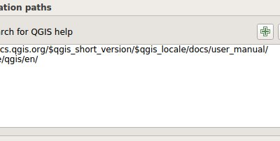
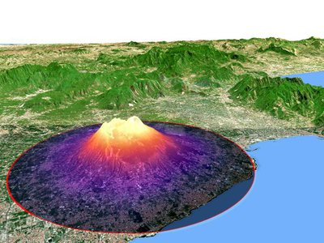
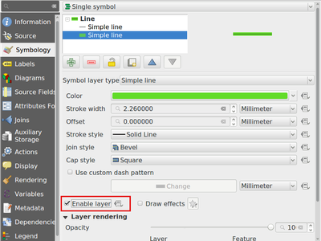
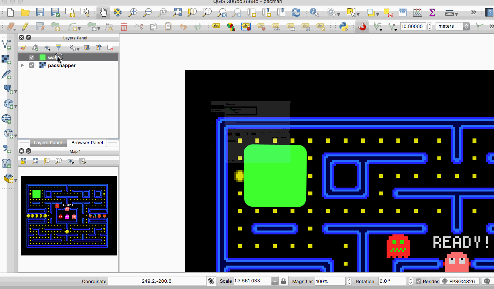
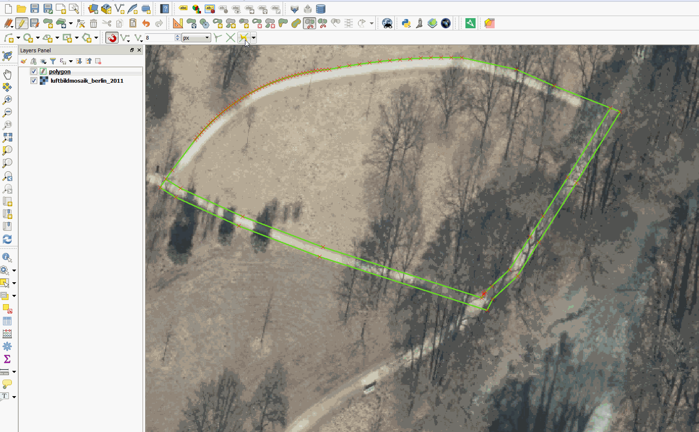
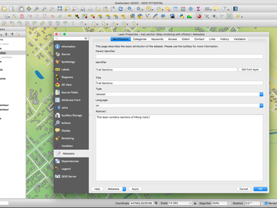
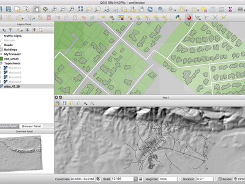
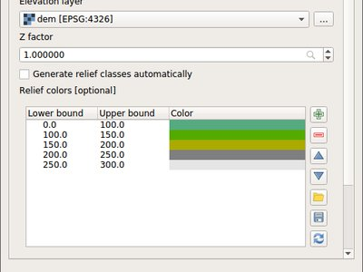
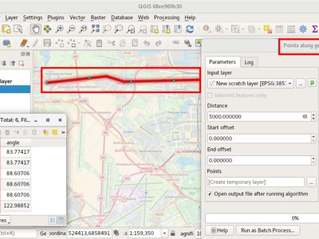
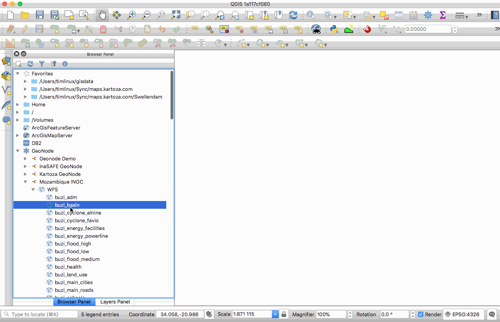

Log met wijzigingen voor QGIS 3.0¶

De grootste uitgave van QGIS ooit! QGIS 3.0 is een enorme aanpassing en opruiming van ons geliefde Open Source GIS. QGIS 3.0 brengt een enorme lijst met nieuwe wijzigingen - de hoogtepunten daarvan zullen we hier proberen te behandelen. Zoals altijd herinneren we u er aan dat QGIS een open bron project is en vragen u om te overwegen ons te sponsoren door donaties, sponsorschap of bijdragen aan de documentatie van de code, website, enzovoort.
Dankwoord
We would like to thank the developers, documenters, testers and all the many folks out there who volunteer their time and effort (or fund people to do so). From the QGIS community we hope you enjoy this release! If you wish to donate time, money or otherwise get involved in making QGIS more awesome, please wander along to qgis.org and lend a hand!
QGIS is supported by donors and sponsors. A current list of donors who have made financial contributions large and small to the project can be seen on our donors list. If you would like to become and official project sponsor, please visit our sponsorship page for details. Sponsoring QGIS helps us to fund our six monthly developer meetings, maintain project infrastructure and fund bug fixing efforts. A complete list of current sponsors is provided below - our very great thank you to all of our sponsors!
QGIS is gratis software en u bent niet verplicht om maar iets te betalen voor het gebruiken ervan - in feite willen we mensen, wijd en zijd verspreid, aanmoedigen om het te gebruiken ongeacht uw financiële of sociale status - wij geloven dat het uitrusten van mensen met gereedschappen voor het maken van ruimtelijke beslissingen zal resulteren in een betere wereld voor de gehele mensheid.
- Sponsoren voor QGIS versie 3.0
- Algemeen
- Mogelijkheid: Plug-in gebiedsstatistieken verwijderd
- Mogelijkheid: Plug-in dxf2shp verwijderd
- Mogelijkheid: Plug-in Orphaned oracle raster verwijderd
- Mogelijkheid: provider TauDEM verwijderd uit de bron voor Processing
- Mogelijkheid: Meer Help en de mogelijkheid om de locatie van de QGIS Helpbestanden te configureren
- Mogelijkheid: Widgets Photo, WebView en FileName migreren naar Attachment
- Mogelijkheid: Providers otb en lidartools verwijderd uit Processing
- Gebruikers-interface
- Mogelijkheid: Getabde zwevende vensters inschakelen
- Mogelijkheid: Ondersteuning toegevoegd voor zoomen met fijne-resolutie voor het muiswiel
- Mogelijkheid: Zoekbalk toegevoegd aan dialoogvenster Snelkoppelingen configureren
- Mogelijkheid: Locatiebalk
- Mogelijkheid: Meer niet blokkerend bewerken in regels
- Mogelijkheid: Een optie toegevoegd om menu’s voor kleurenschema’s voor de gebruiker weer te geven
- Mogelijkheid: Kleurinstelling voor decoreren van de Noordpijl in het kaartvenster
- Mogelijkheid: Verbeterde Als afbeelding opslaan voor kaartvenster
- Mogelijkheid: Schakelen met de zichtbaarheid van geopende panelen in het hoofdvenster
- Mogelijkheid: Verbeterde consistentie van gebruikers-interface
- Mogelijkheid: Lagen openen in één enkele groep
- 3D-mogelijkheden
- Expressies
- Mogelijkheid: Nieuwe variabelen voor expressies
- Mogelijkheid: nieuwe globale variabele voor expressie @qgis_locale
- Mogelijkheid: Nieuwe variabelen voor expressies voor instellingen van kaarten
- Mogelijkheid: Nieuwe functies voor expressies
- Mogelijkheid: Variabele @parent weergeven in functies aggregate
- Mogelijkheid: Expressiefunctie item_variables binnen lay-outs
- Documentatie
- Symbologie
- mogelijkheid: Data-bepaalde zichtbaarheid symboollaag
- Mogelijkheid: Kleurverloop opslaan en herstellen die is gebruikt voor renderen van enkelband pseudokleur
- Mogelijkheid: Punten en Inches toevoegen aan beschikbare symbooleenheden
- Mogelijkheid: Nieuw widget Knop kleurverloop
- Mogelijkheid: Beheer van stijlen opnieuw bewerkt en opgewaardeerd
- Mogelijkheid: Ondersteuning voor instellen van kleur en transparantie voor meerdere items voor renderers voor rasters
- Mogelijkheid: Geef een schuifbalk Alfa weer bij een knop met keuzemenu voor kleur
- Mogelijkheid: Ondersteuning voor acties van de werkbalk Raster uitstrekken voor de renderer van pseudokleur
- Mogelijkheid: Ondersteuning voor transparantie voor renderer met paletten
- Mogelijkheid: Automatisch uitstrekken raster bij bijwerken van kaartvenster
- Mogelijkheid: Beheer over marges voor inhoud van annotaties
- Mogelijkheid: Annotaties kunnen worden gevuld met stijlen Symbool vullen
- Mogelijkheid: Renderer voor cluster van punten
- Mogelijkheid: NIEUWE ALGORITMES VOOR INKLEUREN VAN DE KAART IN QGIS 3.0
- Mogelijkheid: Nieuwe optie voor kleurverlopen met “voorkeuzen”
- Mogelijkheid: Toestaan dat symboollagen tijdelijk worden uitgeschakeld
- Mogelijkheid: Eenvoudig opmaken van discrete rasters
- Labellen
- Diagrammen
- Renderen
- Mogelijkheid: Ondersteuning voor live-lagen
- Mogelijkheid: Activeren van vernieuwen van laag of acties voor laag vanuit signaal NOTIFY van PostgreSQL
- Feature: Resultaten van labellen cachen om onnodig hertekenen te vermijden bij het vernieuwen van het kaartvenster
- Mogelijkheid: Renderer voor raster bij puntverplaatsing
- Digitaliseren
- Mogelijkheid: Selectie bereikpunten in gereedschap Punten
- Mogelijkheid: Optie voor standaard Z-waarde toevoegen
- Mogelijkheid: Verplaatsen van objecten profiteert nu van Gevanceerd digitaliseren
- Mogelijkheid: Toegevoegde functionaliteit voor het kopiëren/verplaatsen van objecten in het kaartgereedschap Object verplaatsen
- Mogelijkheid: Traceren met verschuiving
- Mogelijkheid: Opnieuw opbouwen gereedschap Punten
- Mogelijkheid gereedschap Punten: middelste-punt-markeringen om punten toe te voegen
- Mogelijkheid: Gereedschap Punten: doorlopende lijn
- Mogelijkheid: Gereedschap Punten: ondersteuning voor paneel Geavanceerd digitaliseren
- Gegevensbeheer
- Mogelijkheid: Schuiven naar huidige object in attributentabel
- Mogelijkheid: Kaart van CRS-bereik in Projecteigenschappen
- Mogelijkheid: Ondersteuning voor hulpopslag
- Mogelijkheid: Metadata opnieuw opgebouwd
- Mogelijkheid: Geünificeerd dialoogvenster Gegevensbron behren
- Mogelijkheid: Gereedschap OSM downloaden verwijderd
- Formulieren en widgets
- Mogelijkheid: Beheren van labels voor individuele widgets Bewerken toestaan
- Mogelijkheid: Configureren van knoppen Object koppelen/losmaken in widget Relatie bewerken
- Mogelijkheid: Conditionele zichtbaarheid voor tabs en groepsvakken
- Mogelijkheid: Slimmere standaardwidgets Bewerken met plug-ins om ze te kiezen
- Mogelijkheid: Veldbeperkingen kunnen worden afgedwongen of niet
- Mogelijkheid: Op laag gerichte acties toevoegen
- Mogelijkheid: Veldwaarden weergeven in automatisch aanvullen in modus Formulierfilter
- Mogelijkheid: Zoomen naar objecten toegevoegd en flitsen van sneltoetsen voor objecten in dialoogvenster Selecteren met formulier
- Mogelijkheid: Toevoegen van tussen/niet tussen aan numerieke velden in Selecteren met formulier
- Legenda laag
- Printvormgeving
- Mogelijkheid: Beheer over tekenen va horizontale en verticale lijnen in het tabelraster van Printvormgeving
- Mogelijkheid: Sleep qpt naar QGIS om een nieuw formuliersjabloon voor Printvormgeving te maken
- Mogelijkheid: Maken van aanpassen van regelafstand voor labels van items voor Legenda van Printvormgeving toestaan
- Mogelijkheid: Kiezen van CRS voor kaartitems toestaan
- Mogelijkheid: Ingedrukt houden van Shift bij het tekenen van polylijn/polygoon beperkt hoeken van de lijn
- Mogelijkheid: Meer Data-bepaalde besturingselementen
- Mogelijkheid: Opnieuw opgebouwde Printvormgeving
- Analyse-gereedschappen
- Processing
- Mogelijkheid: Nieuw algoritme voor verschuiven van lijnen
- Mogelijkheid: Nieuw algoritme voor enkelzijdige buffers
- Mogelijkheid: Keuze voor methode van vereenvoudiging toegevoegd voor vereenvoudigen
- Mogelijkheid: Ondersteuning voor typen geometrie voor uitvoer in modellen
- Mogelijkheid: Drempel voor hoek voor algoritme voor gladder maken
- Mogelijkheid: Betere ondersteuning voor dimensies Z/M en gebogen geometrieën
- Mogelijkheid: Algoritmes voor rasteranalyse toegevoegd aan Processing
- Mogelijkheid: Nieuw algoritme om specifieke knopen uit te nemen
- Mogelijkheid: Gebiedsstatistieken uit de plug-in Gebiedsstatistieken weergeven in Toolbox
- Mogelijkheid: Algoritme voor uitvoeren SQL van Spatialite toegevoegd
- Mogelijkheid: Nieuw algoritme voor verlengen van lijnen
- Mogelijkheid: Nieuw uittreksel voor algoritme-expressie
- Feature: Algoritme Importeren in Spatialite toegevoegd
- Mogelijkheid: Algoritmes voor interpoleren
- Mogelijkheid: Nieuw algoritme om geometrie te berekenen met een expressie
- Feature: Geometrieën aan algoritme van laag snappen
- Mogelijkheid: Nieuw invoertype voor expressies
- Mogelijkheid: SplitWithLines
- Mogelijkheid: Algoritme Pool van ontoegankelijkheid
- Mogelijkheid: Uitnemen op attribuut kan waarden null/notnull uitnemen
- Mogelijkheid: Algoritme Index voor attributen maken
- Mogelijkheid: Nieuw algoritme ‘Drop geometries’
- Mogelijkheid: Nieuw universeel algoritme ‘Basic stats for field’
- Mogelijkheid: Plug-in Heatmap geporteerd naar algoritme voor Processing
- Mogelijkheid: Nieuw algoritme om geometrieën loodrecht te maken
- Mogelijkheden: Algoritmes Netwerkanalyses
- mogelijkheid: Modellen voor Processing exporteren als PDF/SVG
- Mogelijkheid: Nieuw algoritme voor het afbreken van tabellen
- Mogelijkheid: Optie ‘Ongeldige afhandeling object’ toegevoegd
- Mogelijkheid: Algoritme om ongeldige geometrieën te repareren met behulp van eigen implementatie van makeValid()
- Mogelijkheid: Zoekbalk toegevoegd aan dialoogvenster Scripts ophalen en Modellen
- Mogelijkheid: Generiek algoritme Zwaartepunt
- Mogelijkheid: Algoritme Punten uitnemen verbeterd
- Mogelijkheid: Nieuw algoritme voor vertalen (verplaatsen) van punten
- Mogelijkheid: Venster Grafische modellen bouwen van Processing verbeterd
- Mogelijkheid: Nieuw algoritme voor Rapporteren van unieke waarden raster
- Mogelijkheid: Provider TauDEM verwijderd uit de bron voor Processing
- Mogelijkheid: Een bestand downloaden vanuit Processing
- Mogelijkheid: Algoritme Geoptimaliseerde punten langs geometrie
- Mogelijkheid: Algoritme Sorteren op expressie
- Opties voor toepassing en project
- Browser
- Gegevensproviders
- Mogelijkheid: Nieuw geünificeerd dialoogvenster ‘Laag toevoegen’
- Mogelijkheid: GeoPackage
- Mogelijkheid: Ondersteunen van alle beschrijfbare rasterindelingen voor GDAL voor het dialoogvenster ‘Opslaan als’ voor rasterlagen
- Mogelijkheid: Ondersteuning voor geometrieën Z/M in gpkg, Spatialite en provider voor geheugenlagen
- Mogelijkheid: Afhandeling van unieke en not-null beperking
- Mogelijkheid: Integratie van GeoNode
- Mogelijkheid: Letterlijke standaardwaarden detecteren voor provider Spatialite
- Mogelijkheid: Ondersteuning voor maken van index voor attributen voor provider Spatialite
- Mogelijkheid: Ondersteuning voor arrays toegevoegd
- Mogelijkheid: Ondersteuning voor HStore in gegevensprovider PostGIS
- Mogelijkheid: Automatisch ontdekken van relaties voor PostgreSQL toegevoegd
- Mogelijkheid: Afhankelijkheden voor gegevens tussen lagen
- Mogelijkheid: Exporteren van DXF: ondersteuning voor opnieuw projecteren
- Mogelijkheid: Stijl laden/opslaan in database voor GPKG en Spatialite
- Mogelijkheid: Verbeterde behandeling van standaarden
- QGIS Server
- Plug-ins
- Mogelijkheid: Vertrouwde status in Plug-ins beheren en installeren verwijderd
- Mogelijkheid: Offline editing: Vlag toegevoegd om alleen geselecteerde objecten te kopiëren
- Mogelijkheid: GDALTools verplaatst naar Processing
- Mogelijkheid: Installeren van plug-ins uit lokale ZIP-pakketten toestaan
- Mogelijkheid: Plug-ins kunnen een aangepaste Help geven in een venster voor Expressie
- Programmeerbaarheid
Sponsoren voor QGIS versie 3.0¶


Zilver¶
 Zilver : 3000 EUR
Zilver : 3000 EUR
AERO ASAHI Corporation |
QGIS user group Denmark |
ARTOGIS a/s |
QGIS user group Germany |
OPENGIS.ch GmbH |
Terraplan |
Office of Public Works, Flood Risk Management and Data Management Section |
WIGeoGIS |


Brons¶
 Brons : 500 EUR
Brons : 500 EUR
2D3D.GIS |
Integrate Sustainability Pty Ltd |
Ager Technology |
LandPlan OS GmbH |
Alta ehf |
Lutra Consulting |
Asociación Geoinnova |
MHTC Ltd |
Automatic Knowledge |
MappingGIS |
BGEO Open GIS, SL |
Mapzen |
Cawdor Forestry |
Mierune LLC |
Chartwell Consultants Ltd. |
OSGeo.JP |
City of Canning |
Open Geo Groep |
City of Canning |
Pixalytics |
Datenbankgesellschaft mbH |
QGIS user group Brazil |
Dr. Kerth + Lampe Geo-Infometric GmbH |
QGIS user group Sweden |
FORNAT AG |
QTibia Engineering |
Forest Design SRL |
Royal Borough of Windsor and Maidenhead |
GAIA mbH |
SOLTIG (Soluciones en Tecnologías de Información Geográfica) |
GIS Support Sp. z o.o. |
Septima |
GKG Kassel, (Dr.-Ing. Claas Leiner) |
Solargis s.r.o. |
Gaia3D, Inc. |
Syddjurs Kommune |
|
Gemeente Gouda |
TerreLogiche |
|
GeoS Geodätische Software Andreas Hellinge |
Trage Wegen vzw |
Geographica |
Urbsol |
Gis3W |
WAGNER-IT |
Infraplan Engineering Services Pvt. Ltd. |
WhereGroup GmbH & Co. KG |
Ingenieurbüro Kauppert |
tkt teleconsult Kommunikationstechnik GmbH |
Insurance Australia Group Limited (IAG) |


Algemeen¶
Mogelijkheid: Plug-in gebiedsstatistieken verwijderd¶
Dit wordt nu volledig uitgevoerd via Processing, wat de meest logische plaats is voor deze mogelijkheid.
Mogelijkheid: Plug-in dxf2shp verwijderd¶
Deze functionaliteit is beschikbaar in OGR en het is niet langer nodig om een specifieke plug-in voor QGIS deze taak uit te laten voeren
Mogelijkheid: provider TauDEM verwijderd uit de bron voor Processing¶
TauDEM is een bijzonder specifieke set programma’s en vereist het installeren van enkele aanvullende programma’s. We hebben dus besloten het een afzonderlijke provider te maken wat de grootte van de codebasis en inspanningen voor onderhoud vermindert.
Mogelijkheid: Meer Help en de mogelijkheid om de locatie van de QGIS Helpbestanden te configureren¶
Meer knoppen Help voor algoritmes en dialoogvensters zijn toegevoegd en die verwijzen nu naar de online QGIS Documentatie.
Configureren maakt het mogelijk toegang te krijgen tot de centraal opgeslagen inhoud voor de Help, in het netwerk van een organisatie of op lokale computers. Ook is het mogelijk verschillende bronnen voor Help te combineren.

Deze mogelijkheid werd ontwikkeld door Alexander Bruy

Mogelijkheid: Providers otb en lidartools verwijderd uit Processing¶
De nieuwe logica zal zijn om providers voor plug-ins te ontwikkelen die in staat zijn de levenscyclus van externe software te volgen.
Gebruikers-interface¶
Mogelijkheid: Getabde zwevende vensters inschakelen¶
Voor qt > 5.6-bouwsels is het mogelijk verschillende zwevende vensters in hetzelfde zwevende venster te plaatsen waar zij als tabs verschijnen https://woboq.com/blog/qdockwidget-changes-in-56.html

Mogelijkheid: Ondersteuning toegevoegd voor zoomen met fijne-resolutie voor het muiswiel¶
Enkele muizen / aanwijsapparaten (met name op Mac) hebben fijnere resoluties. Zij sturen gebeurtenissen voor het muiswiel met een hoge frequentie maar met kleinere waarden Delta. Zoomen met zulke apparaten is niet te gebruiken voor snelle acties voor zoomen. Dit is opgelost in 3.0.
Deze mogelijkheid werd ontwikkeld door Matthias Kuhn
Mogelijkheid: Zoekbalk toegevoegd aan dialoogvenster Snelkoppelingen configureren¶
Ondersteunt zoeken op naam van de actie en op snelkoppeling

Deze mogelijkheid werd ontwikkeld door Alexander Bruy
Mogelijkheid: Locatiebalk¶
De Locatiebalk is a snelle, altijd gereed zijnde, algemene en in te passen zoekmogelijkheid in de linker benedenhoek van QGIS.
Momenteel is het mogelijk te zoeken naar algoritmes, acties en laagnamen, maar ook om een object te selecteren in de huidige actieve laag door een waarde voor een attribuut in te typen.
Het is ‘eenvoudig’ uit te breiden, dus iedereen kan een QgsLocatorFilter maken voor zijn/haar nationale dienst voor geocoderen of andere online zoekmachines of mogelijkheid voor zoeken in een database.

Deze mogelijkheid werd ontwikkeld door Nyall Dawson
Mogelijkheid: Meer niet blokkerend bewerken in regels¶
- op schaal brengen van kaarteenheden
- kleurpaletten en beperkte willekeurige bewerkers voor kleurverlopen
- kleuren bewerken in de regel in een lijst met kleuren in het paneel Stijlen
- in regels bewerken van kleuren en symbolen in Printvormgeving
nu in regels weergegeven in het paneel Stijlen
Mogelijkheid: Kleurinstelling voor decoreren van de Noordpijl in het kaartvenster¶
Kleurinstellingen zijn toegevoegd voor alle decoraties van de Noordpijl in het kaartvenster.

Deze mogelijkheid werd ontwikkeld door Mathieu Pellerin
Mogelijkheid: Verbeterde Als afbeelding opslaan voor kaartvenster¶
De functie Kaart als afbeelding opslaan voor het kaartvenster is uitgebreid en biedt gebruikers nu de mogelijkheid om de schaal, resolutie en bereik direct aan te passen. Bereiken kunnen worden beperkt tot een verhouding hoogte-breedte. Een functie Kaart als PDF opslaan werd ook toegevoegd om het kaartvenster snel als een resolutie-onafhankelijke PDF te exporteren.

Deze mogelijkheid werd mogelijk gemaakt door Andreas Neumann (gedeeltelijk uit fondsen)
Deze mogelijkheid werd ontwikkeld door Mathieu Pellerin
Mogelijkheid: Schakelen met de zichtbaarheid van geopende panelen in het hoofdvenster¶
Toegankelijk via: - menu Beeld > Zichtbaarheid paneel aan/uit - toetsenbord sneltoets Ctrl+Tab

Deze mogelijkheid werd ontwikkeld door Mathieu Pellerin
Mogelijkheid: Verbeterde consistentie van gebruikers-interface¶
Dit werk werd gesponsord door het programma voor toekennen van fondsen van QGIS voor “toevoegen van consistentie aan besturingselementen UI” is nu volledig en in de master ingevoegd. De volgende taken werden als deel van dit werk uitgevoerd:
- Alle API met betrekking tot transparantie/doorzicht/alfa werd gestandaardiseerd naar setOpacity() en opacity(). De methoden vragen een dubbele waarde tussen 0 (transparant) en 1 (doorzichtig), wat consistentie behoudt met de API van Qt.
- Een nieuw widget QgsOpacityWidget werd gemaakt en wordt nu overal in de gebruikers-interface gebruikt waar doorzichtigheid wordt ingesteld. Dit zorgt voor consistent gedrag en laat de besturingselementen voor doorzichtigheid er overal hetzelfde uitzien.
- Draaien is gestandaardiseerd in de API en gebruikers-interface, dus nu wordt altijd met de wijzers van de klok mee gedraaid. Alle widgets voor draaien zijn bijgewerkt en accepteren dus waarden van -360 tot en met 360.
- Projecten van 2.x met labels die draaien en data-gedefineerd draaien gebruiken worden transparant bijgewerkt bij het openen in 3.0
- API’s voor het op schaal brengen zijn consistent gemaakt over de gehele API van QGIS. De verwarrende mix van noemers voor schalen versus echte schalen is verwijderd, waarbij alles nu werkt met noemers voor de schaal. Het gedrag van alle aanroepen voor schaalbereiken is gestandaardiseerd met een algemene betekenis voor schalen min/max (en expliciete documentatie voor de API met betrekking tot dit)
- Alle besturingselementen voor schaal gebruiken nu de standaard widgets voor schaal, voor consistentie door de gehele gebruikers-interface
- Labelen gebruikt nu dezelfde definitie voor schaal min/max als de rest van de gebruikers-interface, en bestaande projecten worden transparant bijgewerkt bij het openen in 3.0.
- De meeste nog openstaande problemen met betrekking tot het gebruiken van op schaal brengen, inclusief problemen die de op regels gebaseerde limieten van op schaal brengen verbreken, zijn opgelost
Dank aan de QGIS PSC en projectdonoren voor het sponsoren hiervan en het mogelijk maken om ermee door te gaan!
Deze mogelijkheid werd mogelijk gemaakt door QGIS sponsors en donoren
Deze mogelijkheid werd ontwikkeld door Nyall Dawson
Mogelijkheid: Lagen openen in één enkele groep¶
Wanneer u probeert vele sublagen te openen kunt u ze nu allemaal openen binnen dezelfde groep in de Legenda.

Deze mogelijkheid werd mogelijk gemaakt doo Kartoza
Deze mogelijkheid werd ontwikkeld door Etienne Trimaille
3D-mogelijkheden¶
Mogelijkheid: 3D kaartweergave en terrein genereren¶
We hebben een spiksplinternieuwe eigen 3D-kaartweergave in QGIS! De 3D-kaartweergave geeft een 2D-kaart weer (gerenderd uit projectlagen) bovenop terrein. Standaard is het terrein een plat vlak, maar het is mogelijk rasterlagen met digitale hoogtemodellen te gebruiken als bron voor gegevens voor de hoogte.
Gebruik menu Beeld > Nieuwe 3D-kaartweergave om een 3D-weergave van het project toe te voegen. Dit zal een nieuw vensterwidget maken met een 3D-kaartvenster. De 3D-weergave gebruikt dezelfde besturingselementen als 2D-kaartweergaven om door de kaart te bladeren met de muis (sleep de kaart om die te verplaatsen, muiswiel om te zoomen) of de pijltjestoetsen van het toetsenbord. In aanvulling hierop zijn er camera-besturingselementen, specifiek voor 3D-weergaven: Het is mogelijk om de camera op een van de volgende manieren te draaien of op en neer te bewegen:
- door te slepen met de muis terwijl de middelste muisknop wordt ingedrukt
- door Shift in te drukken en met de muis te slepen terwijl de linker muisknop wordt ingedrukt
- door Shift in te drukken en de toetsen pijl omhoog/pijl omlaag/pijl links/pijl rechts te gebruiken

Deze mogelijkheid werd mogelijk gemaakt door QGIS.ORG
Deze mogelijkheid werd ontwikkeld door Martin Dobias (Lutra Consulting)
Mogelijkheid: 3D-renderers voor kaartlagen¶
In de standaard configuratie worden kaartlagen gerenderd naar 2D-kaartafbeeldingen bovenop het terrein. Het is echter mogelijk beter gebruik te maken van de 3D-wereld door 3D-renderers te configureren voor enkele kaartlagen. Met 3D-renderers kunnen de gegevens worden weergegeven in 3D-weergaven als echte 3D-objecten - dit wordt momenteel ondersteund voor vectorlagen (alle typen geometrie - punt, lijn of polygoon). Dit maakt veel betere visualisatie mogelijk, bijvoorbeeld:
- polygonen met omtrekken van gebouwen kunnen worden uitgerekt (mogelijk met data-gedefinieerde hoogte) om ze er als #D uit te laten zien
- punten met puntlocaties voor bomen kunnen worden gerenderd met 3D-symbolen van bomen (eenvoudige geometrische vormen of bestaande 3D-modellen die worden geladen uit een ondersteunde indeling)
Gebruik het vensterwidget Stijl laag of het dialoogvenster Eigenschappen voor de vectorlaag om 3D-renderers te configureren - er is een nieuw tab voor het configureren van 3D-renderers.

Deze mogelijkheid werd mogelijk gemaakt door QGIS.ORG
Deze mogelijkheid werd ontwikkeld door Martin Dobias, Peter Petrik (Lutra Consulting)
Expressies¶
Mogelijkheid: Nieuwe variabelen voor expressies¶
Toegevoegd de variabelen @project_crs en @project_crs_definition voor het ophalen van het CRS van het huidige project
Mogelijkheid: nieuwe globale variabele voor expressie @qgis_locale¶
Geeft de huidige locale terug die wordt gebruikt door QGIS. Standaard is dit de huidige systeemlocale. Als de gebruiker de locale heeft gewijzigd in de instellingen van in QGIS zal de gewijzigde locale worden teruggegeven.

Deze mogelijkheid werd ontwikkeld door Alexander Bruy
Mogelijkheid: Nieuwe variabelen voor expressies voor instellingen van kaarten¶
- map_crs, map_crs_definition: retrieves crs details for map
- map_units: retrieves units for map (eg 'meters','degrees')
Deze mogelijkheid werd mogelijk gemaakt door: North Road
Deze mogelijkheid werd ontwikkeld door Nyall Dawson (North Road)
Mogelijkheid: Nieuwe functies voor expressies¶
Atlas-expressies
- atlas_layerid en atlas_layername: Geven de laag-ID en naam van de laag terug van de huidige laag in de Atlas.
Combinerende expressies
- array_agg(expression, group_by, filter): geeft een array terug van gecombineerde waarden uit een veld of expressie.
Array-expressies
Nieuwe groep die functies voor expressies bevat voor het maken en bewerken van arrays (ook wel bekend als structuren van gegevenslijsten). De volgorde van waarden binnen de array is van belang, tegengesteld aan de gegevensstructuur ‘map’, waar de volgorde van paren sleutel-waarde niet relevant is en waarden worden geïdentificeerd door hun sleutels.
- array(value1, value2, …) : Geeft een array terug die alle waarden bevat die werden doorgegeven als parameter.
- array_append(array, value): Geeft een array terug met de opgegeven waarde toegevoegd aan het einde.
- array_cat(array1, array2, …): Geeft een array terug die alle opgegeven arrays samengevoegd teruggeeft.
- array_contains(array, value): Geeft true terug als een array de opgegeven waarde bevat.
- array_distinct(array): Geeft een array terug die alle afzonderlijke waarden van de opgegeven array teruggeeft.
- array_find(array, value): Geeft de index (0 voor de eerste) terug van een waarde binnen een array. Geeft -1 terug als de waarde niet wordt gevonden.
- array_first(array): Geeft de eerste waarde uit een array terug.
- array_get(array, index): Geeft de n-de waarde (0 voor de eerste) terug uit een array.
- array_insert(array, pos, value): Geeft een array terug met de opgegeven waarde toegevoegd op de opgegeven positie.
- array_intersect(array1, array2): Geeft true terug als een element van array1 bestaat in array 2.
- array_last(array): Geeft de laatste waarde uit een array terug.
- array_length(array): Geeft het aantal elementen in een array terug.
- array_prepend(array, value): Geeft een array terug met de opgegeven waarde toegevoegd aan het begin.
- array_remove_all(array, value): Geeft een array terug waaruit alle items met de opgegeven waarde zijn verwijderd.
- array_remove_at(array, pos): Geeft een array terug waaruit de opgegeven index is verwijderd.
- array_reverse(array): Geeft een array terug van gegeven array met de waarden in omgekeerde volgorde.
- array_slice(array, start_pos, end_pos): Geeft een gedeelte van de array terug. Het gedeelte wordt gedefinieerd door de argumenten start_pos en end_pos.
- array_to_string(array, delimiter, empty_value): Voegt elementen van een array samen tot een tekenreeks, gescheiden door een scheidingsteken en een optionele tekenreeks gebruikend voor lege waarden.
- regexp_matches(string, regex, empty_value): Geeft een array terug van alle opgevangen tekenreeksen die zijn gevangen door vang-groepen, in de volgorde waarin de groepen zelf voorkomen in de opgegeven reguliere expressie voor een tekenreeks.
- string_to_array(string, delimiter, empty_value): Splitst een tekenreeks in een array met behulp van het opgegeven scheidingsteken en de optionele tekenreeks voor lege waarden.
Expressies voor kleuren
- create_ramp(map, discrete): Geeft een balk kleurverloop terug uit een kaart met kleurtekenreeksen en stappen.
Expressies voor datum en tijd
- epoch(date): Geeft de interval in milliseconden terug tussen de UNIX-periode en een opgegeven datumwaarde.
Algemene expressies
- env(name): Haalt een omgevingsvariabele op en geeft de inhoud ervan terug als een tekenreeks. Als de variabele niet wordt gevonden wordt NULL teruggegeven.
- raster_statistic(layer, band, property): Geeft statistieken terug uit een rasterlaag. Eigenschappen: min/max/avg/range/stdev/sum
- with_variable(name, value, node): Deze functie stelt een variabele in voor de code voor een uitdrukking die zal worden verschaft als 3e argument. Dit is alleen nuttig voor gecompliceerde uitdrukkingen, waar dezelfde berekende waarde op verschillende plaatsen dient te worden gebruikt.
Expressies voor geometrie
- extend(geometry, start_distance, end_distance): Verlengt lijnen met een gespecificeerde hoeveelheid aan het begin en einde van de lijn
- hausdorff_distance(geometry a, geometry b, densify_fraction): Geeft de Hausdorff-afstand terug tussen twee geometrieën. Dit is in de basis een meting van hoe soortgelijk of ongelijk 2 geometrieën zijn, met een lagere afstand die meer soortgelijke geometrieën aangeeft.
- inclination(inclination(point_a, point_b): Geeft de hoek terug die wordt gemeten tussen de zenit (0) en de nadir (180) van point_a naar point_b.
- make_circle(center, radius, segment): maakt een cirkelvormige, gesegmenteerde polygoon.
- make_ellipse(center, semi_major_axis, semi_minor_axis, azimuth, segment): Maakt een elliptische, gesegmenteerde polygoon.
- make_regular_polygon(center, radius, number_sides, circle): Maakt een normale polygoon.
- make_triangle(): Help ontbreekt nog
- minimal_circle(geometry, segment): Geeft de minimale omsluitende cirkel van een geometrie terug. Het vertegenwoordigt de minimale cirkel die alle geometrieën binnen de verzameling omsluit.
- offset_curve(geometry, distance, segments, join, miter_limit): Geeft een geometrie terug die wordt gevormd door de verschuiving van een geometrie lijnstring naar de kant. Afstanden zijn in het ruimtelijke referentiesysteem van deze geometrie.
- oriented_bbox(geom): Geeft een geometrie terug die het minimale georiënteerde begrenzingsvak van een invoergeometrie weergeeft.
- pole_of_inaccessibility(geometry, tolerance): Berekent de geschatte Pool van Ontoegankelijkheid voor een oppervlakte, wat het meest veraf gelegen interne punt vanaf de rand van het oppervlakte is. Deze functie gebruikt het algoritme ‘polylabel’ (Vladimir Agafonkin, 2016), wat een iteratieve benadering is die gegarandeerd het ware punt van de Pool van Ontoegankelijkheid binnen een gespecificeerde tolerantie. Meer precieze toleranties vereisen meer doorgangen an zullen langer duren om te berekenen.
- simplify(geometry, tolerance): Vereenvoudigt een geometrie door knopen te verwijderen met behulp van een op een afstand gebaseerde drempel (d.i. het algoritme Douglas Peucker). Het algoritme behoudt grotere afwijkingen in geometrieën en verkleint het aantal punten in nagenoeg rechte segmenten.
- simplify_vw(geometry, tolerance): Vereenvoudigt een geometrie door knopen te verwijderen met behulp van een op een gebied gebaseerde drempelwaarde (d.i. het algoritme Visvalingam-Whyatt). Het algoritme verwijdert punten die kleine gebieden in geometrieën maken, bijv. smalle spaken of nagenoeg rechte segmenten.
- smooth(geometry, iterations, offset, min_length, max_angle): Maakt een geometrie gladder door het toevoegen van extra knopen die hoeken in de geometrie afronden.
- single_sided_buffer(geometry, distance, segments, join, miter_limit): Geeft een geometrie terug die wordt gevormd door slechts één zijde van een geometrie lijnstring te bufferen. Afstanden zijn in het ruimtelijke referentiesysteem van deze geometrie.
Laageigenschappen
- crs_description: Geeft de beschrijving van het CRS van de laag terug.
Expressies voor kaarten
Deze groep bevat functies voor expressies voor het creëren en bewerken van gegevensstructuren ‘map’ (ook wel bekend als het datatype dictionary, paren sleutel-waarde of associatieve arrays). Men kan waarden toekennen aan gegeven sleutels. De volgorde van paren sleutel-waarde in het object map is niet relevant.
- map(key1, value1, key2, value2, , …): Geeft een kaart terug die alle sleutels en waarden bevat die werden doorgegeven als paar parameters.
- map_akeys(map): Geeft alle sleutels van een kaart terug als een array.
- map_avals(map): Geeft alle waarden van een kaart terug als een array.
- map_concat(map1, map2, …): Geeft een kaart terug die alle items van de opgegeven kaarten bevat. Als twee kaarten dezelfde sleutel bevatten, wordt de waarde van de tweede kaart genomen.
- map_delete(map, key): Geeft een kaart terug waaruit de opgegeven sleutel en de bijbehorende waarde zijn verwijderd.
- map_exist(map, key): Geeft true terug als de opgegeven sleutel bestaat in de kaart.
- map_get(map, key): Geeft de waarde van een kaart terug, opgegeven als zijn sleutel.
- map_insert(map, key, value): Geeft een kaart terug met een toegevoegde sleutel/waarde.
Kaartlagen
Nieuwe groep die een lijst met kaartlagen bevat die beschikbaar zijn in het huidige project. Geeft interne ID’s voor kaartlagen terug. Dit wordt gebruikt in vele andere functies voor expressies die verwijzen naar kaartlagen.
rekenkundige expressies
- inclination(point_a, point_b): Geeft de hoek terug die wordt gemeten tussen de zenit (0) en de nadir (180) van point_a naar point_b.
Operatoren
- ~: Voert een reguliere expressie voor een overeenkomst uit op een waarde van een tekenreeks.
Expressies voor records en attributen
hernoemd vanaf slechts “Record”
- get_feature_by_id(layer, feature_id): Geeft het object met een ID op een laag terug.
- is_selected(feature, layer): Geeft een object terug als dat is geselecteerd. Indien aangeroepen zonder parameters controleert het het huidige object.
- num_selected(layer): Geeft het aantal geselecteerde objecten in een opgegeven laag terug. Werkt standaard op de laag waarop de expressie wordt geëvalueerd.
- represent_value(value, fieldName): Geeft de geconfigureerde waarde voor weergave terug voor een veldwaarde. Het is afhankelijk van het geconfigureerde type widget. Dit is vaak nuttig voor widgets ‘Waardenkaart’.
- uuid(): Genereert een Universally Unique Identifier (UUID) voor elke rij. Elke UUID is 38 tekens lang.
Relaties
Nieuwe groep die alle beschikbare tabelrelaties in een project vermeld. Nuttig voor functies relation_aggregate.
Vervallen
- $scale: oude variabele om de huidige schaal van de kaart op te halen. Vervangen door maps_scale
Wijzigingen
- Wijziging in functie substr()
- ondersteun negatieve startwaarde (bijv. substr(‘hello’,-2) geeft ‘lo’ terug)
- ondersteun negatieve waarde voor lengte (bijv. substr(‘hello’,3,-1) geeft ‘ll’ terug)
- parameter voor lengte nu optioneel, standaard aan het einde van de tekenreeks (bijv. substr(‘hello world’,7) geeft ‘world’ terug)
- strpos() vertrouwt nu op een eenvoudige tekenreeks binnen een zoekactie in een tekenreeks
- regexp_match() geeft nu de positie van een overeenkomende reguliere expressie terug
Deze mogelijkheid werd ontwikkeld door meerdere ontwikkelaars
Mogelijkheid: Variabele @parent weergeven in functies aggregate¶
Dit maakt het mogelijk toegang te krijgen tot attributen en geometrie vanuit het ouderobject in het filter van de expressiefunctie “aggregate”. Hiermee kunnen samenvoegingen worden berekend per object.
E.g. max "measurement" for each point_station per polygon_research_area.
Of een standaard attribuutwaarde bij het digitaliseren van objecten:
aggregate(layer:='countries', aggregate:='max', expression:=\"code\", filter:=intersects( $geometry, geometry(@parent) ) )

Deze mogelijkheid werd ontwikkeld door Matthias Kuhn (OPENGIS.ch)
Mogelijkheid: Expressiefunctie item_variables binnen lay-outs¶
Dit voegt een nieuwe expressiefunctie new item_variables toe wanneer expressies worden gebruikt binnen de context van een lay-out.
De functie vraagt één enkel argument, de ID voor een item in de lay-out, en geeft een kaart- of variabelenaam als waarde voor dat item. Dit stelt u in staat dingen te doen als tekst in te voeren in een label, eigenschappen ophalen uit een ander item in de lay-out, bijv
Schaal van de kaart invoegen in een label:
map_get( item_variables( 'map'),'map_scale')
X-coördinaat van kaartcentrum invoegen in een label:
x(map_get( item_variables( 'map'),'map_extent_center'))
Deze mogelijkheid werd mogelijk gemaakt door: North Road
Deze mogelijkheid werd ontwikkeld door Nyall Dawson (North Road)
Documentatie¶
Mogelijkheid: Verbeteringen aan algoritmes van Processing¶
Algoritmes van Processing zijn opnieuw bekeken en gedocumenteerd. Klikken op de knop Help zal de website van QGIS openen en de beschrijving van het algoritme weergeven met verbeterde documentatie en afbeeldingen.

Deze mogelijkheid werd mogelijk gemaakt door het QGIS programma voor het toekennen van fondsen
Deze mogelijkheid werd ontwikkeld door Matteo Ghetta (Faunalia), Alexander Bruy
Symbologie¶
mogelijkheid: Data-bepaalde zichtbaarheid symboollaag¶
Voegt een data-bepaalde override toe om de zichtbaarheid van een symboollaag te beheren. Stelt gebruikers in staat om het tekenen van bepaalde symboollagen uit te schakelen voor overeenkomende objecten.
Deze mogelijkheid werd mogelijk gemaakt door: North Road
Deze mogelijkheid werd ontwikkeld door Nyall Dawson (North Road)
Mogelijkheid: Kleurverloop opslaan en herstellen die is gebruikt voor renderen van enkelband pseudokleur¶
Deze mogelijkheid werd ontwikkeld door Alexander Bruy
Mogelijkheid: Punten en Inches toevoegen aan beschikbare symbooleenheden¶
Deze mogelijkheid werd mogelijk gemaakt door: North Road
Deze mogelijkheid werd ontwikkeld door Nyall Dawson (North Road)
Mogelijkheid: Nieuw widget Knop kleurverloop¶
In QGIS 3.0, is de afhandeling van kleurverlopen veel beter geworden via een nieuw geïntroduceerd widget Knop kleurverloop. Verbeteringen omvatten: - aangepaste instellingen voor kleurverlopen worden onthouden als projecten opnieuw worden geopend - inverteren van het kleurverloop is geïmplementeerd in het widget, wat deze actie inschakelt in geheel QGIS - snelle toegang tot “favoriete” kleurverlopen in het pop-upmenu van het widget - uitwisseling met catalogi (cpt-city en ColorBrewer) is nu veel plezieriger

Deze mogelijkheid werd ontwikkeld door Mathieu Pellerin
Mogelijkheid: Beheer van stijlen opnieuw bewerkt en opgewaardeerd¶
Beheer van stijlen heeft een belangrijke upgrade gekregen. De verbeteringen omvatten:
- Een nieuw systeem voor favoriete groepen werd toegevoegd, dat het widget voor de symbolenlijst als standaard gebruikt
- De geselecteerde tag / slimme groep in het widget symbolenlijst blijft nu behouden bij het wisselen van lagen (en over sessies)
- Het widget symbolenlijst zal het combinatievak voor tag / slimme groep bijwerken als gebruikers categorieën toevoegen / hernoemen / verwijderen
- Gebruikers k,unnen nu direct symbolen taggen, als ook toevoegen als Favoriete plaats, bij het opslaan ervan naar de database voor stijlen
- Groepen zijn verwijderd en volledig vervangen door tags om het beheer van stijlen te stroomlijnen
- Tags zijn geïntegreerd in de gebruikersinterface voor importeren/exporteren

Deze mogelijkheid werd ontwikkeld door Mathieu Pellerin
Mogelijkheid: Ondersteuning voor instellen van kleur en transparantie voor meerdere items voor renderers voor rasters¶
Het is nu mogelijk tegelijkertijd de kleur en transparantie te wijzigen voor meerdere waarden voor de enkelband pseudokleur en de renderers met paletten. Selecteer eenvoudigweg waarden in de waardenlijst en klik met rechts om een pop-upmenu te laten verschijnen.
Deze mogelijkheid werd ontwikkeld door Mathieu Pellerin
Mogelijkheid: Geef een schuifbalk Alfa weer bij een knop met keuzemenu voor kleur¶
Maakt snelle aanpassingen in de Alfa van de kleur mogelijk

Deze mogelijkheid werd mogelijk gemaakt door: North Road
Deze mogelijkheid werd ontwikkeld door Nyall Dawson (North Road)
Mogelijkheid: Ondersteuning voor acties van de werkbalk Raster uitstrekken voor de renderer van pseudokleur¶
Deze mogelijkheid werd ontwikkeld door Mathieu Pellerin
Mogelijkheid: Ondersteuning voor transparantie voor renderer met paletten¶
In QGIS 3.0, is het nu mogelijk de waarde voor de transparantie te wijzigen voor unieke waarden voor de renderer met paletten.

Deze mogelijkheid werd ontwikkeld door Mathieu Pellerin
Mogelijkheid: Automatisch uitstrekken raster bij bijwerken van kaartvenster¶
bekijk https://lists.osgeo.org/pipermail/qgis-developer/2016-September/044393.html voor het vervolg van het bijwerken van het bereik bij automatisch classificeren van raster pseudokleur.
Deze mogelijkheid werd ontwikkeld door Even Rouault
Mogelijkheid: Beheer over marges voor inhoud van annotaties¶
Maakt instellen van marges links/boven/rechts/onder mogelijk voor de inhoud van een annotatie.
Deze mogelijkheid werd mogelijk gemaakt door: North Road
Deze mogelijkheid werd ontwikkeld door Nyall Dawson (North Road)
Mogelijkheid: Annotaties kunnen worden gevuld met stijlen Symbool vullen¶
Dit wijzigt het renderen van frames voor annotaties om de aandrijving voor symbologie van QGIS te gebruiken, wat betekent dat alle bestaande vulstijlen nu kunnen worden gebruikt om frames voor annotaties op te maken.
Tekent ook effecten & data-bepaalde symboolparameters.
Deze mogelijkheid werd mogelijk gemaakt door: North Road
Deze mogelijkheid werd ontwikkeld door Nyall Dawson (North Road)
Mogelijkheid: Renderer voor cluster van punten¶
Nieuwe symboolrenderer die nabijgelegen punten groepeert naar één enkel gerenderd markeringssymbool. Optioneel geeft een label het aantal objecten weer dat is samengevoegd in het enkele symbool.
Aanvullend zijn enkele verbeteringen gemaakt voor, specifiek, de renderer voor puntverplaatsing:
- punten worden nu toegewezen aan de groep die het “dichtst” bij hen ligt, in plaats van ze toe te wijzen aan de groep die binnen de zoekafstand het dichtst bij ligt. In sommig gevallen werden hierbij punten toegewezen aan verderaf gelegen cluster, wat resulteerde in minder voorspelbare patronen van clusters
- individuele punten worden nu correct weergegeven in hun eigen status van selecteren
- veel code + documentatie opgeschoond.
Voor ontwikkelaars: QgsPointDisplacementRenderer is gesplitst in een nieuwe puur virtuele basisklasse QgsPointDistanceRenderer, die het detecteren van clusters en groeperen van punten afhandelt. De nieuwe renderer voor clusters hergebruikt deze basisklasse om dupliceren van code te vermijden.
Bekijk het crowd`funding programma <https://north-road.com/qgis-cluster-renderer-crowdfunding/>`__ voor meer details.

Deze mogelijkheid werd mogelijk gemaakt door Andreas Neumann, Qtibia Engineering (Tudor Barascu), Karl-Magnus Jönsson, Geonesia (Nicolas Ponzo) & heel veel aanvullende anonieme donors waarvan de genereuze bijdragen enorm worden gewaardeerd!
Deze mogelijkheid werd ontwikkeld door Nyall Dawson
Mogelijkheid: NIEUWE ALGORITMES VOOR INKLEUREN VAN DE KAART IN QGIS 3.0¶
bekijk http://nyalldawson.net/2017/02/new-map-coloring-algorithms-in-qgis-3-0/

Deze mogelijkheid werd ontwikkeld door Nyall Dawson
Mogelijkheid: Nieuwe optie voor kleurverlopen met “voorkeuzen”¶
Maakt het mogelijk een kleurverloop te gebruiken die bestaat uit een lijst met geselecteerde kleuren. Momenteel is er in QGIS geen manier om een renderer te classificeren met behulp van een lijst van kleuren die u eerder hebt geselecteerd. U kunt dus wel achteraf de kleuren na het classificeren handmatig aanpassen, maar dat is een vervelende klus als u regelmatig hetzelfde kleurenschema gebruikt. In de basis is het als de opties voor het kleurverloop Color brewer maar maakt het voor gebruikers mogelijk om hun eigen voorkeurslijst met kleuren te kiezen (Omdat Cynthia Brewer niet de enige cartografische kleurexpert is!)

Deze mogelijkheid werd mogelijk gemaakt door: North Road
Deze mogelijkheid werd ontwikkeld door Nyall Dawson (North Road)
Mogelijkheid: Toestaan dat symboollagen tijdelijk worden uitgeschakeld¶
Voegt een nieuw selectievak toe aan de onderzijde van de eigenschappen van symboollagen, wat u in staat stelt te beheren of de laag is ingeschakeld of niet. Uitgeschakelde lagen worden niet getekend, maar worden opgeslagen en kunnen in een later stadium worden ingeschakeld. Dit maakt het eenvoudiger om het uiterlijk van symbolen aan te passen zonder een symboollaag in zijn geheel te moeten verwijderen.

Deze mogelijkheid werd mogelijk gemaakt door: North Road
Deze mogelijkheid werd ontwikkeld door Nyall Dawson (North Road)
Mogelijkheid: Eenvoudig opmaken van discrete rasters¶
In QGIS 3.0, werd de bestaande renderer met paletten voor rasters aangepast om het mogelijk te maken discrete rasterlagen eenvoudig op te maken, zoals landbedekking of Booleaanse rasters. Nu kunnen gebruikers de hernoemde renderer “Paletten/Unieke waarden” en klikken op de knop “Unieke waarden toevoegen” om alle unieke rasterwaarden uit de laag te laden. Deze worden automatisch een kleur toegewezen met behulp van het geselecteerde kleurverloop.
De berekening van de unieke waarden wordt in een thread op de achtergrond uitgevoerd om de gebruikers-interface bereikbaar te kunnen houden voor grote (of op afstand) rasterlagen. Aanvullend kunnen gebruikers handmatig nieuwe klassen toevoegen indien gewenst, en de geassocieerde pixelwaarde voor elke bestaande klasse bewerken. Verwijderen van meerdere klassen in één keer wordt ook ondersteund, als ook het wijzigen van de kleur, transparantie en labels voor meerdere klassen in één keer.
Kleurpaletten kunnen worden geladen vanuit een tekstbestand, waarbij indelingen voor kleurtabellen van ith ESRI clr/GDAL/GRASS worden ondersteund. Kleurpaletten kunnen, om te delen, worden opgeslagen in een tekstbestand.

Deze mogelijkheid werd mogelijk gemaakt door Stéphane Henriod, Satelligence (http://satelligence.com/), Bird’s Eye View (https://www.birdseyeviewgis.com/), en andere anonieme donoren
Deze mogelijkheid werd ontwikkeld door Nyall Dawson (North Road)
Labellen¶
Mogelijkheid: Grootte lettertype label in mm/pixels toestaan¶
Deze mogelijkheid werd mogelijk gemaakt door: North Road
Deze mogelijkheid werd ontwikkeld door Nyall Dawson (North Road)
Mogelijkheid: Aangepaste werkbalk Labels is nu altijd ingeschakeld¶
Dankzij de waanzinnige hulpopslag en de bewerkbare samengevoegde tabel, is het handmatig aanpassen van labels nu altijd ingeschakeld. U hoeft geen aangewezen velden in uw gegevensbron meer toe te voegen om positie, rotatie, of een andere mogelijke instelling voor labels te wijzigen om de werkbalk te activeren. Nooit meer Alleen-lezen gegevensbronnen kopiëren en veel sneller labellen! Wees gewaarschuwd, labels worden alleen opgeslagen samen met uw projectbestand in een .qgd database van SQLite, of in het gezipte .qgz projectbestand als u die indeling kiest. Vergeet niet om dat bestand .qgd te delen als u uw projectbestand wilt delen.
En voor powerusers, de oude manier met het hebben van gegevens gedefinieerde velden in uw gegevensbron bestaat ook nog steeds. Definieer ze, net als vroeger, in de Laageigenschappen!

Dit werd mogelijk gemaakt door French Ministry of Ecology and Sustainable Developpement
Deze mogelijkheid werd ontwikkeld door OSLANDIA - Paul Blottiere
Diagrammen¶
Mogelijkheid: Data-bepaalde eigenschappen¶
Ondersteuning toegevoegd voor meer data-bepaalde eigenschappen voor diagrammen:
- Afstand
- Prioriteit
- Z-Index
- IsObstakel
- Weergeven
- AltijdWeergeven
- Diagram Starthoek
Deze mogelijkheid werd mogelijk gemaakt door het QGIS programma voor het toekennen van fondsen
Deze mogelijkheid werd ontwikkeld door Nyall Dawson (North Road)
Renderen¶
Mogelijkheid: Ondersteuning voor live-lagen¶
QGIS 3.0 ondersteunt nu live-lagen. Deze lagen worden automatisch opnieuw gerenderd met een tijdsinterval die u bepaalt, op een schone en flikkerloze manier. Live-lagen zijn bijzonder bruikbaar voor het bijhouden van doorlopend wijzigende gegevens, zoals een vloot van auto’s, een vlucht vogels waar u telemetrische gegevens voor hebt, enzovoort.

Deze mogelijkheid werd ontwikkeld door Kartoza & North Road
Mogelijkheid: Activeren van vernieuwen van laag of acties voor laag vanuit signaal NOTIFY van PostgreSQL¶
Volgend op de effecten voor live-lagen maakt dit het mogelijk acties of vernieuwen van de laag in QGIS alleen te doen wanneer de database aan QGIS laat weten dat het iets moet doen. Het vereist minder bronnen dan vernieuwen met een interval, en u kunt daarmee zelfs een toepassing voor chatten coderen in QGIS :)
Bekijk https://vimeo.com/236604742
http://oslandia.com/en/2017/10/07/refresh-your-maps-from-postgresql/
Deze mogelijkheid werd mogelijk gemaakt door het QGIS programma voor het toekennen van fondsen
Deze mogelijkheid werd ontwikkeld door OSLANDIA - Vincent Mora
Feature: Resultaten van labellen cachen om onnodig hertekenen te vermijden bij het vernieuwen van het kaartvenster¶
Deze wijziging maakt het mogelijk de resultaten van labellen te cachen naar een afbeelding, volgend op het renderen van de kaart. Als de afbeelding met de gecachte labelresultaten opnieuw kan worden gebruikt voor de volgende keer renderen dan zal dat gebeuren, dit vermijd de noodzaak om alle lagen die deelnemen in het probleem met labellen opnieuw te tekenen en de oplossing voor het labellen oplossen. In de basis betekent dit dat vernieuwingen van het kaartvenster als resultaat van wijzigingen in elke NIET-GELABELDE laag veel sneller is. (Wijzigen van een laag die deel uitmaakt van de oplossing voor het labellen vereist nog steeds dat alle gelabelde lagen opnieuw moeten worden getekend)
Deze mogelijkheid werd ontwikkeld door Nyall Dawson (North Road)
Mogelijkheid: Renderer voor raster bij puntverplaatsing¶
Renderer raster voor puntverplaatsingen

Deze mogelijkheid werd ontwikkeld door Muhammad Yarjuna Rohmat (Kartoza)
Digitaliseren¶
Mogelijkheid: Selectie bereikpunten in gereedschap Punten¶
Dit maakt het mogelijk een bereik aan punten uit een object te selecteren.
Het kan worden geactiveerd door te drukken op Shift+R - daarna dient men te klikken op een start en eindpunt in een object - dit zal alle punten tussen deze twee selecteren.
De selectie van het bereik kan op elk moment worden geannuleerd door met rechts te klikken of te drukken op de Esc-toets.
Voor gesloten bogen (polygonen), is het mogelijk om te schakelen naar de “langere” weg rond de ring door Ctrl ingedrukt te houden bij het klikken op het eindpunt.

Deze mogelijkheid werd mogelijk gemaakt door Frans ministerie voor Ecology
Deze mogelijkheid werd ontwikkeld door Martin Dobias (Lutra Consulting)
Mogelijkheid: Optie voor standaard Z-waarde toevoegen¶
Geopackages/Shapefiles maken: Nu met de optie voor Z-waarden

Deze mogelijkheid werd ontwikkeld door Alexander Lisovenko / Paul Blottiere
Mogelijkheid: Verplaatsen van objecten profiteert nu van Gevanceerd digitaliseren¶
Verplaats eenvoudigweg een object met behulp van de nieuwe “klik - klik ergonomie” en gebruik et paneel Geavanceerd digitaliseren en sneltoets om hoeken, afstanden, exacte XY te beperken.
Deze mogelijkheid werd ontwikkeld door Denis Rouzaud
Mogelijkheid: Toegevoegde functionaliteit voor het kopiëren/verplaatsen van objecten in het kaartgereedschap Object verplaatsen¶
Dit maakt het mogelijk een object te kopiëren en ze in één beweging te verplaatsen vanuit een geselecteerd object

Deze mogelijkheid werd ontwikkeld door Denis Rouzaud
Mogelijkheid: Traceren met verschuiving¶
U kunt nu het gereedschap Traceren digitaliseren met een verschuiving zoals weergegeven in bijgaande afbeelding.

Deze mogelijkheid werd mogelijk gemaakt door d.b.g. Datenbankgesellschaft mbH
Deze mogelijkheid werd ontwikkeld door Martin Dobias
Mogelijkheid: Opnieuw opbouwen gereedschap Punten¶
Het gereedschap Knooppunt (nu hernoemd naar gereedschap Punten) heeft een volledige nieuwe bewerking ondergaan om het meer flexibel te maken. Enkele van de meest belangrijke wijzigingen zijn:
- In plaats van gebruikers eerst een object te laten selecteren en dan de punten te bewerken in de tweede stap, is het gereedschap nu in staat tegelijkertijd te werken met meerdere objecten. Het is daarom eenvoudiger om punten ui verscheidene objecten te selecteren en ze in één keer te verplaatsen of te verwijderen. Als de noodzaak bestaat om het selecteren van punten te beperken tot slechts specifieke object(en), is het mogelijk de objecten eerst te selecteren met het gereedschap Selecteren - het gereedschap Punten zal in dergelijke gevallen alleen werken met punten uit geselecteerde object(en).
- In plaats van slechts te werken met de huidige geselecteerde laag is het gereedschap nu in staat tegelijkertijd te werken met alle lagen die in de modus Bewerken staan. Verplaatsen van objecten die logischerwijze bij elkaar behoren maar zich in verschillende lagen bevinden is veel eenvoudiger geworden. Echter, de huidige laag wordt gerespecteerd als er meerdere keuzen zijn bij het kiezen van punten.
- Objecten en hun punten worden geaccentueerd als de gebruiker de muisaanwijzer over hen verplaatst, wat een betere visuele terugkoppeling geeft.
- In QGIS 2.x zouden de punten worden verplaatst door op ene punt te klikken, het te slepen met de linker muisknop nog steeds ingedrukt en tenslotte worden geplaatst door de muisknop los te laten. Dit gedrag is veranderd naar de benadering “klik-klik” , waar de gebruiker eerst op ene punt klikt om het te kiezen, dan te slepen zonder enige muisknop ingedrukt te houden en het te plaatsen op de uiteindelijk bestemming door opnieuw te klikken. De argumenten voor deze wijziging waren de volgende:
- het is gemakkelijker om de punten precies te plaatsen (niet constant druk uit te hoeven oefenen op de muisknop)
- men verplaatst knopen niet per ongeluk
- het is mogelijk de bewerking ongedaan te maken
- het maakt het mogelijk de kaart te verschuiven door op de spatiebalk te drukken terwijl de knoop wordt verplaatst
Bekijk https://github.com/qgis/QGIS-Enhancement-Proposals/issues/69 for more information.

Dit werd mogelijk gemaakt door QWAT
Deze mogelijkheid werd ontwikkeld door Martin Dobias (Lutra Consulting)
Mogelijkheid gereedschap Punten: middelste-punt-markeringen om punten toe te voegen¶
Het verbeterde gereedschap Punten geeft nu ook extra markeringen weer op de middelste punt van lijnsegmenten van objecten. Klikken op dergelijke markeringen resulteert in het toevoegen van een nieuw punt. De bestaande manier van het toevoegen van punten door dubbel te klikken op segmenten is behouden.

Dit werd mogelijk gemaakt door QWAT
Deze mogelijkheid werd ontwikkeld door Martin Dobias (Lutra Consulting)
Mogelijkheid: Gereedschap Punten: doorlopende lijn¶
Bij het bewerken van geometrieën lijn met het gereedschap Punten zal het verplaatsen van de muis naar het eerste of laatste punt een extra markering weergeven vlakbij het eindpunt. Klikken op de markering zal een punt toevoegen aan het einde van de geometrie.

Dit werd mogelijk gemaakt door QWAT
Deze mogelijkheid werd ontwikkeld door Martin Dobias (Lutra Consulting)
Mogelijkheid: Gereedschap Punten: ondersteuning voor paneel Geavanceerd digitaliseren¶
Het paneel Geavanceerd digitaliseren werkt nu ook met het gereedschap Punten - het is mogelijk coördinaten van een nieuw of bestaand punt in het paneel in te voeren, net als in andere kaartgereedschappen voor Digitaliseren.

Dit werd mogelijk gemaakt door QWAT
Deze mogelijkheid werd ontwikkeld door Martin Dobias (Lutra Consulting)
Gegevensbeheer¶
Mogelijkheid: Schuiven naar huidige object in attributentabel¶

Deze mogelijkheid werd ontwikkeld door Marco Hugentobler

Mogelijkheid: Ondersteuning voor hulpopslag¶
Een nieuwe tab is beschikbaar in de Eigenschappen voor een vectorlaag om hulpopslag te beheren :
Een nieuwe actie Gegevens in het project opslaan is beschikbaar in het data-bepaalde menu wat een eenvoudige manier verschaft om hulpgegevens voor een eigenschap te beheren :
Hulpgegevens worden opgeslagen in een database van SQLite en beheerd met behulp van de gegevensprovider OGR (in plaats van de provider Spatialite) om het bestand voor de database zo klein mogelijk te houden. Dit databasebestand (met de extensie .qgd) wordt ofwel opgeslagen naast het projectbestand of direct ingebed in de nieuwe indeling .qgz.
Bekijk het originele pull request en dit artikel dat meer uitlegt

Deze mogelijkheid werd ontwikkeld door Paul Blottiere / Oslandia
Mogelijkheid: Metadata opnieuw opgebouwd¶
Het systeem voor metadata in QGIS is opnieuw opgebouwd. In QGIS 3.0 introduceren we ons eigen interne, geformaliseerde schema voor metadata, dat los staat van de indeling van het projectbestand van QGIS. We introduceren nieuwe API-capabilities voor het lezen en schrijven van metadata voor lagen. We hebben de weergave van de gegevens van de metadata afgescheiden van het bewerken en hebben een nieuw programma voor het bewerken van de metadata toegevoegd. Metadata wordt momenteel opgeslagen in het projectbestand. Het kan ook worden opgeslagen als een XML-bestand naast op bestand gebaseerde lagen of in een lokale database van SQLite voor lagen op afstand (bijv. PostGIS).
u kunt meer lezen over de overwegingen die voor het ontwerp in overweging zijn genomen door te kijken naar het QGIS Enhancement Proposal (QEP) - QEP-92
Onthoud dat dit de eerste fase is in de ontwikkeling van een complete aan de standaarden voldoende infrastructuur voor metadata voor QGIS. We zoeken naar meer fondsen om een meer complete implementatie voor het systeem voor metadata te implementeren - bekijk dit document voor details voor toekomstige werkpakketten waarvoor fondsen nodig zijn.
De specificatie voor het QGIS schema voor metadata staat`hier <https://github.com/qgis/QGIS/blob/master/resources/qgis-resource-metadata.xsd>`__.
De primaire verschaffer van fondsen voor dit werk was de WereldBank/GFDRR met ondersteunde fondsen van NINA.

Dit werd mogelijk gemaakt door WorldBank/GFDRR
Deze mogelijkheid werd ontwikkeld door Kartoza en samenwerkenden
Mogelijkheid: Geünificeerd dialoogvenster Gegevensbron behren¶
Eén enkel geünificeerd dialoogvenster om beheer van gegevensbronnen en het laden van lagen te beheren.

Deze mogelijkheid werd mogelijk gemaakt door Boundless
Deze mogelijkheid werd ontwikkeld door Alessandro Pasotti
Mogelijkheid: Gereedschap OSM downloaden verwijderd¶
We hebben het gereedschap OSM downloaden, dat werd verschaft in de uitgaven van 2.x van QGIS, verwijderd. We raden u aan in plaats daarvan de plug-in QuickOSM te gebruiken die is geporteerd naar QGIS 3.0.
Formulieren en widgets¶
Mogelijkheid: Beheren van labels voor individuele widgets Bewerken toestaan¶
In de ontwerper Slepen en neerzetten zal een dubbelklik op een item het mogelijk maken om te beheren of het label voor elk individueel item zou moeten worden weergegeven.
Deze mogelijkheid werd ontwikkeld door Matthias Kuhn
Mogelijkheid: Configureren van knoppen Object koppelen/losmaken in widget Relatie bewerken¶
Deze mogelijkheid werd ontwikkeld door Matthias Kuhn
Mogelijkheid: Conditionele zichtbaarheid voor tabs en groepsvakken¶
Dit voegt een nieuwe optie voor configureren toe om voorwaardelijk tabs en groepsvakken weer te geven of te verbergen in formulieren van de ontwerper Slepen en neerzetten. Configureren wordt gedaan via een dubbelklik in de ontwerpboom in de interface voor het configureren van velden. Een expressie kan worden ingevoerd om de zichtbaarheid te beheren. De expressie zal elke keer opnieuw worden geëvalueerd als waarden in het formulier worden gewijzigd en zal de tab of groepsvak overeenkomstig worden weergegeven/verborgen.
Deze mogelijkheid werd ontwikkeld door Matthias Kuhn
Mogelijkheid: Slimmere standaardwidgets Bewerken met plug-ins om ze te kiezen¶
Nu kunnen de widgets een score geven over hoe goed zij een type veld af zouden kunnen handelen. Hetgeen leidt tot betere standaardwidgets.
Aanvullend kunnen plug-ins worden toegevoegd om een type widget te kiezen met een functie voor externe informatie. Eén daarvan gebruikt een tabel in PostgreSQL, die het mogelijk maakt te specificeren welk type widget en configuratie te gebruiken voor elk veld.
Automatisch widgets RelationReference kiezen voor vreemde sleutels.
Deze mogelijkheid werd ontwikkeld door Patrick Valsecchi
Mogelijkheid: Veldbeperkingen kunnen worden afgedwongen of niet¶
Niet-afgedwongen beperkingen laten slechts een waarschuwing aan de gebruiker zien, maar voorkomen niet het indienen van het object. Afgedwongen beperkingen blokkeren gebruikers voor het indienen van objecten die niet voldoen. We hebben nu dus zachte waarschuwingen! Alle beperkingen die worden gedetecteerd door de provider worden altijd afgedwongen.

Deze mogelijkheid werd mogelijk gemaakt door OpenGIS.ch
Deze mogelijkheid werd ontwikkeld door Nyall Dawson (North Road)
Mogelijkheid: Op laag gerichte acties toevoegen¶
In de attributentabel is er een nieuw knop voor het activeren van acties die niet zijn gebaseerd op individuele objecten, maar in plaats daarvan op de gehele laag. Normaal gesproken zullen zij acties uitvoeren die zijn gericht op alle objecten of de selectie.
Deze mogelijkheid werd ontwikkeld door Matthias Kuhn
Mogelijkheid: Veldwaarden weergeven in automatisch aanvullen in modus Formulierfilter¶
Het automatisch aanvullen is netjes op de achtergrond bijgewerkt zodat de GUI netjes en bereikbaar blijft, zelfs als er miljoenen records in de geassocieerde tabel staan.
Het wordt nu gebruikt als een widget Zoeken voor tekstvelden en is dus zichtbaar in het venster Browser als u het filter instelt op een tekstveld, of als u het formulier start, gebaseerd op selecteren/filteren door een laag te kiezen op F3 te drukken.
Deze mogelijkheid werd mogelijk gemaakt door: North Road
Deze mogelijkheid werd ontwikkeld door Nyall Dawson (North Road)
Mogelijkheid: Zoomen naar objecten toegevoegd en flitsen van sneltoetsen voor objecten in dialoogvenster Selecteren met formulier¶
Maakt heel snel navigeren naar en identificeren van objecten die overeenkomen met de criteria in het formulier mogelijk
Deze mogelijkheid werd mogelijk gemaakt door: North Road
Deze mogelijkheid werd ontwikkeld door Nyall Dawson (North Road)
Mogelijkheid: Toevoegen van tussen/niet tussen aan numerieke velden in Selecteren met formulier¶

Deze mogelijkheid werd ontwikkeld door Mathieu Pellerin
Legenda laag¶
Mogelijkheid: Actie Niet geselecteerde lagen verbergen¶
Stelt u in staat snel alle niet geselecteerde lagen te verbergen. Dit is bijzonder handig als u een zeer groot project heeft en alles, behalve een aantal lagen, snel wilt verbergen

Deze mogelijkheid werd mogelijk gemaakt door SMEC (Surbana Jurong)
Deze mogelijkheid werd ontwikkeld door Nyall Dawson (North Road)
Mogelijkheid; Wijzigen van ergonomie of de zichtbaarheid van lagen binnen groepen¶
- Selecteren/deselecteren van een groep wijzigt niet de controlestatus van zijn kinderen. Een knoop is alleen zichtbaar als en alleen als die is geselecteerd en al zijn ouders ook.
- Er bestaat niet langer een status semi-geselecteerd voor een groep
- Ctrl-klik op een niet geselecteerde groep zal de groep en al zijn afstammelingen selecteren.
- Klikken op een niet geselecteerde laag zal de laag selecteren en al zijn ouders.
- Ctrl-klik op een geselecteerde groep zal de groep en al zijn afstammelingen deselecteren.
- Ctrl-klik op een geselecteerde laag zal de laag deselecteren en al zijn ouders.
- Deze acties zijn beschikbaar in items van het contextmenu in de boomweergave.
- Onzichtbare lagen, omdat zij of hun ouder(s) niet zijn geselecteerd, zijn uitgegrijsd.
Deze mogelijkheid werd ontwikkeld door Even Rouault
Printvormgeving¶
Mogelijkheid: Beheer over tekenen va horizontale en verticale lijnen in het tabelraster van Printvormgeving¶
Het is nu mogelijk om het renderen van horizontale en verticale lijnen van tabelitems van Printvormgeving onafhankelijk te beheren. Deze toegevoegde flexibiliteit breidt de mogelijkheden voor opmaken van dit item direct in QGIS uit.

Deze mogelijkheid werd ontwikkeld door Mathieu Pellerin
Mogelijkheid: Sleep qpt naar QGIS om een nieuw formuliersjabloon voor Printvormgeving te maken¶
Deze mogelijkheid werd mogelijk gemaakt door SMEC (Surbana Jurong)
Deze mogelijkheid werd ontwikkeld door Nyall Dawson (North Road)
Mogelijkheid: Maken van aanpassen van regelafstand voor labels van items voor Legenda van Printvormgeving toestaan¶
Deze mogelijkheid werd ontwikkeld door Mathieu Pellerin
Mogelijkheid: Kiezen van CRS voor kaartitems toestaan¶
Dit maakt het mogelijk het CRS voor kaartitems te laten verschillen van het CRS voor het kaartvenster/project. Het staat ook toe dat verschillende kaartitems verschillende CRS-en hebben, bijv. een overzichtskaart kan worden ingesteld op een ander CRS dan de hoofdkaart.
Deze mogelijkheid werd mogelijk gemaakt door: North Road
Deze mogelijkheid werd ontwikkeld door Nyall Dawson (North Road)
Mogelijkheid: Ingedrukt houden van Shift bij het tekenen van polylijn/polygoon beperkt hoeken van de lijn¶
Deze mogelijkheid werd mogelijk gemaakt door: North Road
Deze mogelijkheid werd ontwikkeld door Nyall Dawson (North Road)
Mogelijkheid: Meer Data-bepaalde besturingselementen¶
Items Frame en Achtergrondkleuren Data-bepaalde SVG-kleuren en breedte omtrek voor items afbeelding van Printvormgeving (In het bijzonder nuttig als de afbeelding een Noordpijl weergeeft!) Data-bepaalde Aantal titels voor Legenda en kolommen Data-bepaalde Kleuren en breedte lijn schaalbalk
Deze mogelijkheid werd mogelijk gemaakt door het QGIS programma voor het toekennen van fondsen
Deze mogelijkheid werd ontwikkeld door Nyall Dawson (North Road)
Mogelijkheid: Opnieuw opgebouwde Printvormgeving¶
Dit is een omvangrijke restauratie over hoe lay-outs worden beheerd in de code van QGIS.
Belangrijkste punten zijn:
- Een nieuwe klasse QgsLayoutManager die wordt gebruikt voor de opslag en de serialisatie/deserialisatie van lay-outs. Een QgsLayoutManager is verbonden met het QgsProject. Dit maakt het voor broncode mogelijk toegang te krijgen tot lay-outs zijn zijn verbonden aan een project. Alle afhandeling van lay-outs is verplaatst van toepassing naar bron, wat het voor server (en andere niet op de toepassing gebaseerde projecten. QField/roam?) eenvoudiger maakt om toegang te verkrijgen tot projectlay-outs zonder fragiel parsen van XML te verstoren.
- Vensters voor printvormgeving worden op aanvraag gemaakt en vernietigd bij het sluiten. Dit vermijdt het zware vereiste om alle vensters en widgets voor Printvormgeving te maken voor elk item van printvormgeving bij het laden van projecten. Dit was de belangrijkste reden waarom het laden van projecten met lay-outs eerder zo traag waren. Nu worden vensters voor printvormgeving alleen gemaakt als het venster wordt geopend en vernietigd als het venster wordt gesloten. Widgets voor het configureren van items voor printvormgeving worden ook op aanvraag gemaakt (wanneer een item wordt geselecteerd) in plaats van het eerst maken van alle widgets.
- Een bijkomend voordeel van het vernietigen van vensters voor printvormgeving bij het sluiten is dat we nu niet langer last hebben van een probleem van Qt die het gebruiken van zwevende vensters in vensters van printvormgeving blokkeerde. NU kunt u de panelen van item/lay-out/etc laten zweven! Veel netter voor het werken op volledig scherm met instellingen voor meerdere monitoren.
- Opnieuw bewerkte API voor werken met printvormgevingen via iface. Omdat vensters voor printvormgeving niet bestaan tenzij zij momenteel geopend zijn, zijn alle methoden iface voor de interactie met printvormgevingen opnieuw bewerkt om duidelijk te maken dat zij alleen van toepassing zijn op geopende vensters. Aanvullend is een eenvoudige interface voor Printvormgeving, die een stabiele API voor plug-ins en scripts om te werken met vensters voor Printvormgeving , toegevoegd. Nu nog heel basaal, maar in de toekomst kunnen we uitbreiden met meer hooks om plug-ins toe te staan interactief te zijn met vensters van Printvormgeving.
- Veel code opgeschoond en verwijderd
Meer info op https://north-road.com/qgis-layout-and-reporting-engine-campaign/

Deze mogelijkheid werd mogelijk gemaakt door de Zwitserse QGIS gebruikersgroep en nog veel meer anderen!
Deze mogelijkheid werd ontwikkeld door Nyall Dawson (North Road)
Analyse-gereedschappen¶
Mogelijkheid: Tellen unieke waarden raster voor Processing¶
http://imhere-asia.com/blog/post/qgis-raster-layer-unique-values-count
Deze mogelijkheid werd ontwikkeld door http://imhere-asia.com/
Processing¶
Mogelijkheid: Nieuw algoritme voor verschuiven van lijnen¶
Deze mogelijkheid werd mogelijk gemaakt door: North Road
Deze mogelijkheid werd ontwikkeld door Nyall Dawson (North Road)
Mogelijkheid: Nieuw algoritme voor enkelzijdige buffers¶
Deze mogelijkheid werd mogelijk gemaakt door: North Road
Deze mogelijkheid werd ontwikkeld door Nyall Dawson (North Road)
Mogelijkheid: Keuze voor methode van vereenvoudiging toegevoegd voor vereenvoudigen¶
Deze wijziging stelt gebruikers in staat te kiezen welke methode te gebruiken bij het uitvoeren van het algoritme voor het vereenvoudigen van geometrieën, met keuzes gebaseerd op algoritme voor de bestaande afstand (Douglas Peucker), algoritme gebaseerd op gebied (Visvalingam) en snappen-aan-raster.
Visvaligam in het bijzonder resulteert gewoonlijk in meer cartografisch prettigere vereenvoudiging met de standaard methoden gebaseerd op de afstand.
Deze mogelijkheid werd mogelijk gemaakt door: North Road
Deze mogelijkheid werd ontwikkeld door Nyall Dawson (North Road)
Mogelijkheid: Ondersteuning voor typen geometrie voor uitvoer in modellen¶
Invoer voor kind-algoritmes van Model worden nu gefilterd tot die welke toepasbare typen geometrie genereren voor de invoer van een ander kind-algortime
Deze mogelijkheid werd ontwikkeld door Alexander Bruy
Mogelijkheid: Drempel voor hoek voor algoritme voor gladder maken¶
Optie toegevoegd aan QgsGeometry::smooth om segmenten niet gladder te maken dan een bepaalde drempel of hoeken af te scherpen met een hoek die groter is dan een drempel
Deze mogelijkheid werd mogelijk gemaakt door: North Road
Deze mogelijkheid werd ontwikkeld door Nyall Dawson (North Road)
Mogelijkheid: Betere ondersteuning voor dimensies Z/M en gebogen geometrieën¶
Veel meer algoritmes respecteren nu waarden Z/M en negeren deze informatie niet meer, en aanvullend onderhouden veel algoritmes nu op de juiste wijze gebogen geometrieën zonder geforceerde segmentatie van deze geometrieën.
Mogelijkheid: Algoritmes voor rasteranalyse toegevoegd aan Processing¶
De volgende algoritmes werden aan Processing toegevoegd vanuit de plug-in Raster Analysis:
- Aspect
- Helling
- Ruggedness
- Hillshade
- Relief
Nu kunnen deze algoritmes worden gebruikt in scripts, modellen en voor het uitvoeren in batch.

Deze mogelijkheid werd ontwikkeld door Alexander Bruy
Mogelijkheid: Nieuw algoritme om specifieke knopen uit te nemen¶
Dit algoritme stelt u in staat om specifieke knopen uit te nemen uit geometrieën. U kunt bijvoorbeeld de eerste of de laatste knoop uit de geometrie uitnemen.
Het algoritme accepteert een kommagescheiden lijst met aanduidingen voor uit te nemen knopen, bijv. 0 = eerste knoop, 1 = tweede knoop, etc. Negatieve aanduidingen kunnen worden gebruikt om knopen aan het einde van de geometrie uit te nemen. Bijv. -1 = laatste knoop, -2 = op één na laatste knoop.
Deze mogelijkheid werd mogelijk gemaakt door: North Road
Deze mogelijkheid werd ontwikkeld door Nyall Dawson (North Road)
Mogelijkheid: Gebiedsstatistieken uit de plug-in Gebiedsstatistieken weergeven in Toolbox¶
Deze mogelijkheid werd ontwikkeld door Alexander Bruy
Mogelijkheid: Algoritme voor uitvoeren SQL van Spatialite toegevoegd¶
Deze mogelijkheid werd ontwikkeld door Mathieu Pellerin
Mogelijkheid: Nieuw algoritme voor verlengen van lijnen¶
Maakt het mogelijk lijnen met een vastgestelde lengte te verlengen aan begin en einde van de lijn
Deze mogelijkheid werd mogelijk gemaakt door: North Road
Deze mogelijkheid werd ontwikkeld door Nyall Dawson (North Road)
Mogelijkheid: Nieuw uittreksel voor algoritme-expressie¶
Filtert een invoerlaag met een expressie
Deze mogelijkheid werd mogelijk gemaakt door: North Road
Deze mogelijkheid werd ontwikkeld door Nyall Dawson (North Road)
Feature: Algoritme Importeren in Spatialite toegevoegd¶
Deze mogelijkheid werd ontwikkeld door Mathieu Pellerin
Mogelijkheid: Algoritmes voor interpoleren¶
Interpolatie IDW en TIN uit de plug-in Interpolation weergeven in Toolbox
Als resultaat daarvan is de plug-in Interpolation verwijderd
Deze mogelijkheid werd ontwikkeld door Alexander Bruy
Mogelijkheid: Nieuw algoritme om geometrie te berekenen met een expressie¶
Dit algoritme werkt bestaande geometrieën bij (of maakt nieuwe geometrieën) voor invoerobjecten door middel van een expressie voor QGIS. Dit maakt complexe aanpassingen aan de geometrie mogelijk die alle flexibiliteit van het programma voor expressies in QGIS kan gebruiken om geometrieën te bewerken en te maken voor uitvoerobjecten.
Deze mogelijkheid werd mogelijk gemaakt door: North Road
Deze mogelijkheid werd ontwikkeld door Nyall Dawson (North Road)
Feature: Geometrieën aan algoritme van laag snappen¶
De plug-in Geometry Snapper geporteerd naar Processing
Algoritme Snap geometries maakt nu snappen aan ander typen lagen mogelijk, ondersteunt lagen punt/lijn
Algoritme Snap aan laag accepteert een parameter Modus. Met een nieuwe optie om bij voorkeur aan het dichtstbijzijnde punt op de geometrie te snappen. Het oude gedrag was om bij voorkeur aan knopen te snappen, zelfs als een knoop verder van de invoergeometrie aflag dan een segment. De nieuwe optie stelt u in staat geometrieën te snappen aan het dichtstbijzijnde punt, ongeacht of dat een knoop of een segment is.
Deze mogelijkheid werd mogelijk gemaakt door: North Road
Deze mogelijkheid werd ontwikkeld door Nyall Dawson (North Road)
Mogelijkheid: Nieuw invoertype voor expressies¶
Dit voegt ene nieuw invoertype toe voor het invoeren van expressies. Invoer voor expressies kan worden gekoppeld aan een ouderlaag zodat de expressiebouwer de juiste velden en laagvariabelen weergeeft.
Het is ontworpen om te worden gebruikt wanneer een algoritme specifiek een expressie vereist, bijv. Selecteren met expressie en Uitnemen met expressie.
Deze mogelijkheid werd mogelijk gemaakt door: North Road
Deze mogelijkheid werd ontwikkeld door Nyall Dawson (North Road)
Mogelijkheid: SplitWithLines¶
Algoritme SplitLinesWithLines hernoemd naar SplitWithLines. Accepteert polygoon als invoer, ook Alleen geselecteerde lijnen gebruiken om mee te splitsen (als Processing is ingesteld op Alleen selectie) Geeft logbericht als wordt geprobeerd meerder geometrieën te splitsen. Help bijgewerkt
Deze mogelijkheid werd ontwikkeld door Bernhard Ströbl
Mogelijkheid: Algoritme Pool van ontoegankelijkheid¶
Implementeert een algoritme voor processing om de geschatte Pool van Ontoegankelijkheid voor een oppervlakte te berekenen, wat het meest veraf gelegen interne punt vanaf de rand van het oppervlakte is. Deze functie gebruikt het algoritme ‘polylabel’ (Vladimir Agafonkin, 2016), wat een iteratieve benadering is die gegarandeerd het ware punt van de Pool van Ontoegankelijkheid binnen een gespecificeerde tolerantie. Meer precieze toleranties vereisen meer doorgangen en zullen langer duren om te berekenen.
Deze mogelijkheid werd mogelijk gemaakt door: North Road
Deze mogelijkheid werd ontwikkeld door Nyall Dawson (North Road)
Mogelijkheid: Uitnemen op attribuut kan waarden null/notnull uitnemen¶
Ondersteuning toegevoegd voor filteren waar een attribuutwaarde null of not null is
Deze mogelijkheid werd mogelijk gemaakt door: North Road
Deze mogelijkheid werd ontwikkeld door Nyall Dawson (North Road)
Mogelijkheid: Algoritme Index voor attributen maken¶
Maakt het maken van een index op een attribuut in een laag mogelijk voor sneller filteren op attributen
Ondersteuning is afhankelijk van de onderliggende gegevensprovider voor de laag
Deze mogelijkheid werd mogelijk gemaakt door: North Road
Deze mogelijkheid werd ontwikkeld door Nyall Dawson (North Road)
Mogelijkheid: Nieuw algoritme ‘Drop geometries’¶
Verwijdert eenvoudigweg geometrieën uit een invoerlaag en geeft alleen de objecten met attributen terug.
Deze mogelijkheid werd mogelijk gemaakt door: North Road
Deze mogelijkheid werd ontwikkeld door Nyall Dawson (North Road)
Mogelijkheid: Nieuw universeel algoritme ‘Basic stats for field’¶
Vervangt de bestaande algoritmen ‘Basic Stats for Numeric Fields’ en ‘Basic Stats for String Fields’ en voegt ondersteuning toe voor velden date/time/datetime.
Eén enkel geünificeerd algoritme maakt meer flexibele modellen mogelijk waar een veldtype in eerste instantie niet bekend is.
Deze mogelijkheid werd mogelijk gemaakt door: North Road
Deze mogelijkheid werd ontwikkeld door Nyall Dawson (North Road)
Mogelijkheid: Plug-in Heatmap geporteerd naar algoritme voor Processing¶
Deze mogelijkheid werd mogelijk gemaakt door: North Road
Deze mogelijkheid werd ontwikkeld door Nyall Dawson (North Road)
Mogelijkheid: Nieuw algoritme om geometrieën loodrecht te maken¶
Voegt een nieuw algoritme toe dat hoeken in geometrieën ofwel rechte hoeken probeert te maken of rechte lijnen
Deze mogelijkheid werd mogelijk gemaakt door: North Road
Deze mogelijkheid werd ontwikkeld door Nyall Dawson (North Road)
Mogelijkheden: Algoritmes Netwerkanalyses¶
voegt algoritmes Shortest path en Service area toe aan Processing
maakt ook het berekenen van het kortste pad vanaf een punt naar alle punten in een laag mogelijk, of vanuit alle punten in een laag naar een eindpunt. En servicegebieden maken voor alle punten in een laag.
Als resultaat daarvan is de plug-in Roadgraph verwijderd.
Deze mogelijkheid werd ontwikkeld door Alexander Bruy
mogelijkheid: Modellen voor Processing exporteren als PDF/SVG¶
In aanvulling op het exporteren van modellen voor Processing als bitmapafbeeldingen, is het nu mogelijk om modellen voor processing te exporteren als resolutie-onafhankelijke PDF’s en SVG’s. Dit maakt het in hoge resolutie exporteren van modellen mogelijk wat het inbedden in documenten en boeken die gepubliceerd worden.

Deze mogelijkheid werd ontwikkeld door Mathieu Pellerin
Mogelijkheid: Nieuw algoritme voor het afbreken van tabellen¶
Verwijdert onherroepelijk alle objecten uit een tabel… wees voorzichtig met het gebruiken ervan!
Deze mogelijkheid werd mogelijk gemaakt door: North Road
Deze mogelijkheid werd ontwikkeld door Nyall Dawson (North Road)
Mogelijkheid: Optie ‘Ongeldige afhandeling object’ toegevoegd¶
Deze mogelijkheid werd ontwikkeld door Victor Olaya
Mogelijkheid: Algoritme om ongeldige geometrieën te repareren met behulp van eigen implementatie van makeValid()¶
Deze mogelijkheid werd ontwikkeld door Alexander Bruy
Mogelijkheid: Zoekbalk toegevoegd aan dialoogvenster Scripts ophalen en Modellen¶
Deze mogelijkheid werd ontwikkeld door Alexander Bruy
Mogelijkheid: Generiek algoritme Zwaartepunt¶
Algoritme Zwaartepunten, dat lagen niet-polygoon afhandelt, opnieuw bijgewerkt
Deze mogelijkheid werd mogelijk gemaakt door: North Road
Deze mogelijkheid werd ontwikkeld door Nyall Dawson (North Road)
Mogelijkheid: Algoritme Punten uitnemen verbeterd¶
Algoritme Punten uitnemen slaat nu index van punten, afstand langs de lijn en hoek bij knoop op
Deze mogelijkheid werd mogelijk gemaakt door Andreas Neumann
Deze mogelijkheid werd ontwikkeld door Nyall Dawson (North Road)
Mogelijkheid: Nieuw algoritme voor vertalen (verplaatsen) van punten¶
maakt het mogelijk geometrieën te verschuiven met een verplaatsing X/Y
Deze mogelijkheid werd mogelijk gemaakt door: North Road
Deze mogelijkheid werd ontwikkeld door Nyall Dawson (North Road)
Mogelijkheid: Venster Grafische modellen bouwen van Processing verbeterd¶
Het venster Grafische modellen bouwen van Processing heeft heel veel aandacht gekregen voor deze uitgave. Verbeteringen omvatten: - besturingselementen voor zoomen in de werkbalk van het venster - aanpassingen aan de locatie van panelen voor invoer en algoritmes - panelen kunnen nu zweven boven het venster van Processing

Deze mogelijkheid werd ontwikkeld door Mathieu Pellerin
Mogelijkheid: Nieuw algoritme voor Rapporteren van unieke waarden raster¶
Een nieuw algoritme werd toegevoegd aan Processing welk het aantal en gebied teruggeeft van elke unieke waarde in een opgegeven rasterlaag.

Deze mogelijkheid werd ontwikkeld door Mathieu Pellerin
Mogelijkheid: Provider TauDEM verwijderd uit de bron voor Processing¶
We hebben de provider TauDEM verwijderd uit Processing.

Mogelijkheid: Een bestand downloaden vanuit Processing¶
Download een bestand uit Processing. Query een API op afstand om een geojson te verkrijgen
Deze mogelijkheid werd ontwikkeld door Etienne Trimaille
Mogelijkheid: Algoritme Geoptimaliseerde punten langs geometrie¶
Ondersteunt ook geometrieën polygoon, handelt geometrieën null af, en neemt de originele hoek van de lijn en de afstand voor elk punt op.

Deze mogelijkheid werd mogelijk gemaakt door Andreas Neumann
Deze mogelijkheid werd ontwikkeld door Nyall Dawson (North Road)
Mogelijkheid: Algoritme Sorteren op expressie¶
Dit werd mogelijk gemaakt door DFAT/DMI
Deze mogelijkheid werd ontwikkeld door Etienne Trimaille (Kartoza)
Opties voor toepassing en project¶
Mogelijkheid: Nieuwe gezipte projectbestandsindeling .qgz¶
Heel lang geleden bespraken we op de mailinglijst van de ontwikkelaars een container om het XML-bestand en andere bronnen op te slaan. Dat is nu mogelijk, hoewel het optioneel blijft. De mogelijkheid voor hulpopslag heeft daar voordeel bij door de geassocieerde database van SQLite op te slaan. We hopen dat in volgende versies ondersteuning wordt opgenomen voor andere bronnen, zoals SVG, kleurverlopen, gegevensbronnen, afbeeldingen, etc…

Dit werd mogelijk gemaakt door French Ministry of Ecology and Sustainable Developpement
Deze mogelijkheid werd ontwikkeld door OSLANDIA - Paul Blottiere
Mogelijkheid: Ondersteuning voor gebruikersprofielen toegevoegd¶
Alle instellingen/plug-ins, etc van de gebruiker worden nu geladen uit de gegevenslocatie voor elk platform van de toepassing en niet langer uit .qgis3/2. Instellingen en plug-ins in elk profiel zijn nu van elkaar geïsoleerd.
Dit maakt het instellen van verschillende setups voor de uitvoering mogelijk, afhankelijk van wat de gebruiker nodig heeft, bijv. testen, productie, demonstratie, etc
Menu Gebruikersrofielen maakt het schakelen tussen profielen, of het maken van nieuwe mogelijk.

Deze mogelijkheid werd ontwikkeld door Nathan Woodrow
Browser¶
Mogelijkheid: Lagen Slepen en neerzetten vanuit boomweergave naar venster Browser¶
Maakt het eenvoudiger om bijv. uw tijdelijke lagen in PostGIS op te slaan
Deze mogelijkheid werd ontwikkeld door Martin Dobias
Mogelijkheid: Zelfstandige toepassing QGIS Browser verwijderd¶
We hebben de zelfstandige toepassing QGIS Browser, die werd meegeleverd met QGIS 2.x, verwijderd. Deze toepassing werd door gebruikers niet echt gewaardeerd en vertegenwoordigde een overhead aan onderhoud die we niet wilden voortzetten in de codebasis van 3.0.
Gegevensproviders¶
Mogelijkheid: Nieuw geünificeerd dialoogvenster ‘Laag toevoegen’¶
U kunt nu één dialoogvenster gebruiken om een grote variëteit aan bestandsindelingen aan QGIS toe te voegen.

Deze mogelijkheid werd ontwikkeld door Alessandro Pasotti
Mogelijkheid: GeoPackage¶
- Processing gebruikt standaard pkg
- Opslaan als gebruikt standaard pkg
- nieuwe laag maken gebruikt standaard pkg
- browser slepen en neerzetten importeren van lagen
Deze mogelijkheid werd ontwikkeld door Alessandro Pasotti
Mogelijkheid: Ondersteunen van alle beschrijfbare rasterindelingen voor GDAL voor het dialoogvenster ‘Opslaan als’ voor rasterlagen¶
Deze mogelijkheid werd ontwikkeld door Nyall Dawson
Mogelijkheid: Ondersteuning voor geometrieën Z/M in gpkg, Spatialite en provider voor geheugenlagen¶
Ondersteuning voor dimensie Z en M-waarden werd toegevoegd aan gpkg, Spatialite en de provider voor geheugenlagen van QGIS. De optie om dimensies Z en M toe te voegen is ook toegevoegd aan de dialoogvensters “Nieuwe laag maken”

Dit werd mogelijk gemaakt door QWAT group, http://www.imhere-asia.com/
Deze mogelijkheid werd ontwikkeld door Mathieu Pellerin, Alexander Bury, Paul Blottiere
Mogelijkheid: Afhandeling van unieke en not-null beperking¶
Automatisch detecteren van unieke en not-null beperkingen aan de kant van de provider geïmplementeerd voor Postgres, Spatialite, provider OGR
Unieke en not-null beperkingen aan de kant van de cliënt kunnen worden ingesteld in QGIS.
Unieke beperkingen worden afgedwongen in het formulier Attribuut
Deze mogelijkheid werd mogelijk gemaakt door OpenGIS.ch
Deze mogelijkheid werd ontwikkeld door Nyall Dawson (North Road)
Mogelijkheid: Integratie van GeoNode¶
GeoNode is een open bron georuimtelijk beheerssysteem voor inhoud dat het eenvoudig maakt om georuimtelijke gegevens op het web te publiceren. QGIS 3.0 omvat nieuwe functionaliteit die het u zeer eenvoudig mogelijk maakt om een instantie van GeoNode toe te voegen aan de boom voor de browser en lagen vanaf die site aan uw project toe te voegen als WMS, WFS of XYZ. er bestaat geen noodzaak om te blijven zoeken naar WMS/WFS-eindpunten, QGIS doet alles voor u. Bij het gebruiken van WMS en XYZ getegelde lagen zal de stijl van de gepubliceerde laag van GeoNode worden gebruikt.
Als de instantie van GeoNode het backend van QGIS Server gebruikt in plaats van een backend van GeoServer kunt u stijlen kopiëren en plakken vanaf de server en ze toepassen op uw lokale laag, zodat uw WFS-laag exact zo rendert als het op de server doet (zoals weergegeven in de geanimeerde GIF hier).
er zijn ook bindingen voor Python zodat u lagen van GeoServer kunt toevoegen aan QGIS vanuit uw plug-ins. Indien u geïnteresseerd bent in het zelf uitvoeren van uw eigen GeoNode met als backend QGIS Server, bekijk dan deze site voor details over hoe u dat kunt doen met behulp van docker en rancher.

Dit werd mogelijk gemaakt door WorldBank/GFDRR
Deze mogelijkheid werd ontwikkeld door Kartoza
Mogelijkheid: Letterlijke standaardwaarden detecteren voor provider Spatialite¶
Deze mogelijkheid werd mogelijk gemaakt door: North Road
Deze mogelijkheid werd ontwikkeld door Nyall Dawson (North Road)
Mogelijkheid: Ondersteuning voor maken van index voor attributen voor provider Spatialite¶
Maakt het maken van indexen voor attributen in lagen van Spatialite mogelijk
Deze mogelijkheid werd mogelijk gemaakt door: North Road
Deze mogelijkheid werd ontwikkeld door Nyall Dawson (North Road)
Mogelijkheid: Ondersteuning voor arrays toegevoegd¶
Ondersteund door Postgres, Spatialite
Deze mogelijkheid werd ontwikkeld door Patrick Valsecchi
Mogelijkheid: Automatisch ontdekken van relaties voor PostgreSQL toegevoegd¶
Deze mogelijkheid werd ontwikkeld door Patrick Valsecchi
Mogelijkheid: Afhankelijkheden voor gegevens tussen lagen¶
Dit maakt het mogelijk afhankelijkheden voor gegevens te declareren tussen lagen. Een afhankelijkheid voor gegevens treedt op bij bewerken van gegevens in een laag, niet door direct aanpassen door de gebruiker kan gegevens van andere lagen bewerken. Dit is bijvoorbeeld het geval als de geometrie van een laag wordt bijgewerkt door een trigger van de database na het aanpassen van de geometrie van een andere laag.
Deze mogelijkheid werd ontwikkeld door Hugo Mercier
Mogelijkheid: Exporteren van DXF: ondersteuning voor opnieuw projecteren¶
Deze mogelijkheid werd ontwikkeld door Jürgen E. Fischer
Mogelijkheid: Stijl laden/opslaan in database voor GPKG en Spatialite¶
Deze mogelijkheid werd ontwikkeld door Even Rouault
Mogelijkheid: Verbeterde behandeling van standaarden¶
Verbeterde behandeling van standaarden (incl. provider standaard clausules, letterlijke standaarden, en QGIS standaarden voor expressie) en automatisch behandelen van beperkingen voor unieke waarden in lagen
Elk veld met een beperking unieke waarde zal gegarandeerd een waarde hebben die uniek is voor het veld.
Dit betekent ook dat na bepaalde bewerkingen voor bewerken (bijv. kopiëren-plakken, objecten splitsen etc.) attributen nu, indien van toepassing, zullen worden ingesteld op hun standaard waarde.
Dit werd mogelijk gemaakt door Kanton Zug en het project QGEP
Deze mogelijkheid werd ontwikkeld door Nyall Dawson (North Road)
QGIS Server¶
Mogelijkheid: QGIS Server opnieuw opgebouwd¶
Zoals u weet springt QGIS naar een nieuwe belangrijke major versie (yes!). Dit doen was noodzakelijk om te kunnen overschakelen naar Python 3, QT5, maar ook omdat we de API van QGIS API op verscheidene plaatsen moesten aanpassen. (http://blog.qgis.org/2016/02/10/qgis-3-0-plans/)
Een jaar geleden trok een kleine troll uit Zwitserland aan de bel voor een sterke behoefte aan een vereiste codebasis voor een server. Inderdaad, de API werd afgesloten door enkele oude methoden van QGIS Server. In het kort, QGIS Server parste het QGIS projectbestand op zijn geheel eigen manier, en maakte afhankelijkheden naar delen van QGIS die we moesten verwijderen.
Uitbesteden van de server codebasis was geen optie, dus we moesten het opnieuw opbouwen. De betrokken partijen bepaalden zich te verbinden aan een codesprint in de stad Lyon, Frankrijk, toegespitst op het delen van hun visie, plannen van het werk en tenslotte het volgende mogelijk maken:
Hoger niveau van opnieuw opbouwen
Alle services (WMS GetMap, WFS GetFeature, GetLegendGraphics, WCS, GetPrint etc..) zijn opnieuw geschreven. Enkele daarvan, zoals WMS, werden geheel opnieuw geschreven. Knuffels voor de ontwikkelaars!
Nieuwe mogelijkheden
- Multi-thread renderen, zoals op het bureaublad
- Een nieuwe optie om metadata van lagen te vertrouwen en dus gaat het laden van een project sneller
- WFS 1.1 ondersteunt https://github.com/qgis/QGIS/pull/5297
- Volledige bindingen voor Python voor de API van Server
- Server Services als plug-in-achtige providers
Diepe, complexe en vervelende taken
- Alle singleton-aanroepen verwijderen
- Alle afhankelijkheden naar de oude QGIS parser voor het projectbestand verbreken
- Minimaliseren van afhankelijkheden naar de bibliotheek GUI. Omdat lettertypen nodig zijn om kaarten te kunnen renderen, wat het volledig verwijderen niet te doen.
Taken voor infrastructuur
- Bouw een OGC compliant platform en integreer het naar een doorlopend platform voor integratie. Rapporten voor conformiteit worden nu gepusht naar tests.qgis.org
- Eenheidstesten toegevoegd … en opnieuw meer eenheidstesten
- Stressen van de QGIS server op veiligheidslekken (SQL-injecties en andere kwaadwillende aanvallen)
- Starten van profileren en benchmarken van uitvoeringen. Dit werk heeft nog wat aandacht nodig - en fondsen - om te worden bereikt
A presentation was given at FOSS4G-EU in July.
Deze mogelijkheid werd mogelijk gemaakt door QGIS.ORG donoren
Mogelijkheid: De mogelijkheid voor informatie over segmenten van het object geometrie in server¶
Veel webcliënten kunnen cirkelvormige bogen in geometrieën niet weergeven. Om het weergeven van een geometrie van een object door dergelijk cliënten mogelijk te maken (bijv. om het object te aacentueren), werd een nieuwe, per project, QGIS serveroptie geïntroduceerd (Menu “Project” -> “Projecteigenschappen” -> “QGIS Server”) om de geometrie te segmenteren vóór het te verzenden naar de cliënt in een antwoord GetFeatureInfo.

Dit werd mogelijk gemaakt door Kanton Zug
Deze mogelijkheid werd ontwikkeld door Marco Hugentobler
Plug-ins¶
Mogelijkheid: Offline editing: Vlag toegevoegd om alleen geselecteerde objecten te kopiëren¶
Dit breidt de mogelijkheden voor offline bewerken uit om alleen te werken met een subset van grote lagen
Deze mogelijkheid werd mogelijk gemaakt door DB Fahrwegdienste GmbH
Deze mogelijkheid werd ontwikkeld door Matthias Kuhn
Mogelijkheid: GDALTools verplaatst naar Processing¶
Plug-in GDALTools is verwijderd.
Alle functies die eerder beschikbaar waren in de plug-in GDALTools werden verplaatst naar het framewerk QGIS Processing, wat het mogelijk maakt deze gereedschappen te gebruiken in scripts, modellen en ze uit te voeren in batchprocessen. Aanvullend werden de algoritmes bijgewerkt met nieuwe parameters, geïntroduceerd in de laatste versies van GDAL en verbeterde overall UI/UX door enkele geavanceerde parameters weer te geven, zoals opties voor het maken, instellingen voor waarden GEEN GEGEVENS etc.

Deze mogelijkheid werd ontwikkeld door Alexander Bruy
Mogelijkheid: Installeren van plug-ins uit lokale ZIP-pakketten toestaan¶
Het is nu nog eenvoudiger om handmatig plug-ins te installeren zonder ze eerst handmatig uit te moeten pakken in de map voor het gebruikersprofiel.

Deze mogelijkheid werd ontwikkeld door Alexander Bruy
Mogelijkheid: Plug-ins kunnen een aangepaste Help geven in een venster voor Expressie¶
Plug-ins die expressies verschaffen kunnen een aangepaste Help geven met tekenreeksen in HTML.

Dit werd mogelijk gemaakt door DFAT/DMI
Deze mogelijkheid werd ontwikkeld door Etienne Trimaille (Kartoza)
Programmeerbaarheid¶
Mogelijkheid: Bijgewerkte klassen voor geometrie¶
Er heeft een grote vernieuwing plaatsgevonden van de klassen voor geometrie in QGIS. De oude klassen zijn hernoemd (zoals in de tabel hieronder). Nieuwe klassen voor geometrie zullen, indien aanwezig, op de juiste wijze attributen Z en M behouden.
Verwijzingen https://github.com/qgis/qgis3.0_api/issues/11
Dit brengt uiteindelijk een consistente status terug binnen het benoemen in de API voor geometrie
Hernoemd¶
| QGIS 2 | QGIS 3 |
|---|---|
| QgsPolygon | QgsPolygonXY |
| QgsMultiPoint | QgsMultiPointXY |
| QgsMultiPolyline | QgsMultiPolylineXY |
| QgsMultiPolygon | QgsMultiPolygonXY |
| QgsPolygonV2 | QgsPolygon |
| QgsMultiPointV2 | QgsMultiPoint |
| QgsMultiPolylineV2 | QgsMultiPolyline |
| QgsMultiPolygonV2 | QgsMultiPolygon |
Zie ook https://github.com/qgis/QGIS/pull/5491
Deze mogelijkheid werd ontwikkeld door Matthias, Nyall en anderen
Mogelijkheden Taakbeheer¶
Introduceert een framewerk voor het maken van taken op de achtergrond, waarmee gewerkt kan worden via een gecentraliseerde beheerder
Voegt nieuwe klassen toe: - QgsTask. Een interface voor langdurende taken op de achtergrond - QgsTaskManager. Handelt groepen van taken af - ook beschikbaar als een lid van QgsApplication voor het traceren van toepassingsbrede taken
Eenvoudige functie voor Python QgsTask.fromFunction toegevoegd voor het maken van taken uit een functie zonder een subklasse QgsTask te moeten maken
Ondersteuning voor afhankelijke taken
Annuleren van een taak waarvan andere afhankelijk zijn leidt ertoe dat ook al deze andere taken worden geannuleerd.
Afhandeling van afhankelijke lagen toegevoegd aan taakbeheer
Als een taak afhankelijke lagen heeft die op het punt staan te worden verwijderd, zal de taak automatisch worden geannuleerd
QgsTasks mag subtaken hebben
Nu mag een QgsTask subtaak QgsTasks hebben ingesteld door QgsTask::addSubTask aan te roepen. Subtaken kunnen hun eigen set met afhankelijke taken hebben.
Subtaken zijn niet zichtbaar voor gebruikers, en gebruikers zien alleen de gehele voortgang en status van de oudertaak.
Dit maakt het mogelijk taken te maken die op zichzelf zijn opgebouwd uit vele kleinere taakcomponenten. Taakbeheer zal nog steeds het activeren en volgorde bepalen van de subtaken, zo kunnen bijvoorbeeld subtaken parallel worden uitgevoerd (als hun afhankelijkheden dat toestaan).
Subtaken mogen zelf ook subtaken hebben.
Deze wijziging is ontworpen om het concept van uitvoering van algoritmes en algoritmes van Grafische modellen bouwen direct te kunnen vertalen naar de architectuur van taakbeheer.
Deze mogelijkheid werd mogelijk gemaakt door het QGIS programma voor het toekennen van fondsen
Deze mogelijkheid werd ontwikkeld door Nyall Dawson (North Road)
Mogelijkheid: API staat slepen en neerzetten van aangepaste items voor browser toe¶
Implementaties van QgsDataItem kunnen hasDragEnabled(), mimeUri() en implementatie QgsCustomDropHandler verschaffen om het neerzetten van aangepaste items af te wikkelen.
Deze mogelijkheid werd ontwikkeld door Martin Dobias